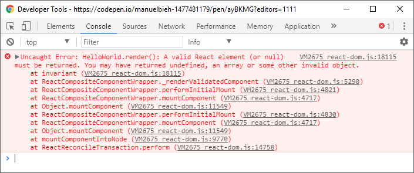

In diesem Buch geht es mir darum einen Einstieg zu ermöglichen, fortgeschrittene Themen aufzugreifen und dabei möglichst React Best-Practices zu vermitteln. Wenn ihr mit dem Buch nicht nur versteht wie etwas funktioniert sondern auch warum, dann habe ich mein Ziel erfüllt. Nun hat jeder Entwickler andere Vorstellungen davon welche Methoden die besten sind und wie man am einfachsten, effizientesten oder schönsten Code schreibt. Allerdings halte ich mich hier stark an die Empfehlungen von den Core-Entwicklern bei Facebook, die die ebenfalls von der Community gut angenommenen Empfehlungen von AirBnB und noch einiger anderer Größen aus der „React-Szene“. Alles gewürzt mit einer Prise eigener Erfahrung.
So gibt es bspw. mehrere Wege wie man seine Anwendung später publiziert, ob man es mit Tools wie Browserify oder Webpack zu einem Bundle packt oder nicht. Ob man seine Komponenten als ES2015-Klassen schreibt oder createClass aus „ES5-Zeiten“ verwendet. Dort wo ich es für sinnvoll erachte, werde ich auf die diversen gängigen Methoden eingehen um nicht nur Wege vorzugeben sondern auch Alternativen aufzuzeigen.
Ich möchte hier jedoch primär möglichst auf die modernsten, aktuellsten und in den meisten Fällen auch einfachsten Methoden eingehen, weshalb ich für die meisten Code-Beispiele von einem Setup mit Webpack, Babel und ES2015 (und neuer) ausgehen werde, das ich im weiteren Verlauf aber noch einmal sehr genau beschreiben werde. Wer zuvor nie mit ES2015+ in Berührung kam wird sicherlich einen Augenblick länger benötigen die Beispiele zu verstehen, ich werde mich indes bemühen alle Beispiele verständlich zu halten und auch auf ES2015+ noch genauer eingehen. JavaScript-Grundkenntnisse sollten jedoch bei der Lektüre vorhanden sein.
Dieses Buch deckt außerdem nur das Thema Einstieg in React ab und bietet keinen Einstieg in JavaScript. Grundsätzliche und an einigen wenigen Stellen sicherlich auch etwas tiefergehende Kenntnisse in JavaScript werden daher vorausgesetzt, wobei ich alles möglichst einsteigerfreundlich erkläre, auch wenn man bisher nur einigermaßen oberflächlich mit JavaScript in Kontakt war. Ich setze nicht voraus, dass jeder Leser fehlerfrei erklären kann wie ein JavaScript-Interpreter funktioniert, ich gehe aber sehr wohl davon aus, dass der Leser einigermaßen darüber Bescheid weiß, wie Scopes in JavaScript funktionieren, was ein Callback ist, wie Promise.then() und Promise.catch() funktionieren und wie das Prinzip asynchroner Programmierung mit JavaScript funktioniert.
Aber keine Sorge: das klingt komplizierter als es am Ende eigentlich ist. Jeder Leser der in der Vergangenheit bereits bspw. mit jQuery gearbeitet hat, sollte beim größten Teil dieses Buches keine Verständnisprobleme haben und meinen Erklärungen folgen können.
Manuel Bieh, seit 2012 als Freelancer im Bereich Frontend-/JavaScript-Entwicklung tätig.
Bevor ich mich dazu entschied als Freelancer zu arbeiten hatte ich ebenfalls bereits fast 10 Jahre Erfahrung als Web-Entwickler, meist mit dem Fokus auf Frontend-Entwicklung, in verschiedenen Unternehmen gesammelt. Lange Zeit habe ich mich eher als Generalist statt als Spezialist gesehen und so gab und gibt es wenige bekannte Frontend-Technologien mit denen ich während meiner beruflichen Laufbahn nicht schon mal zumindest kurz in Berührung gekommen wäre. Als Spezialist habe ich mich aber außer wenn es generell um JavaScript geht nirgendwo gesehen. Dies änderte sich dann schlagartig als mir ein befreundeter Entwickler in 2014 erstmals von React erzählte und ich dann durch Neugierde und ganz konkret durch ein Projekt für Zalando erstmals intensiver mit React in Kontakt kam.
Anfangs fremdelte ich noch etwas, so wie übrigens viele, die neu in React einsteigen, doch je länger und intensiver ich mich mit React auseinandersetzte, desto mehr schlug meine anfängliche Skepsis in Begeisterung um. Seitdem hat mich React so gepackt, dass seitdem meine Projekte allesamt so ausgewählt habe, dass dort React im Einsatz ist (und dessen Einsatz auch sinnvoll ist!). In dieser Zeit habe ich viel gelernt (und lerne auch immer noch jeden Tag dazu), habe dabei in kleinen Teams mit unter 5 und in recht großen Teams mit über 30 Leuten gearbeitet und dort mein React-Wissen eingebracht und selbst immer wieder neue Eindrücke und Wissen mitgenommen.
Die Komplexität von React ist dabei aber nicht zu unterschätzen. Und so ist es zwar möglich relativ schnell in ziemlich kurzer Zeit eine Anwendung mit React zu entwickeln. Wenn man aber Wert auf hohe Qualität legt gibt es dort viele Stellschrauben an denen man drehen kann um Code-Qualität, Performance und Wartbarkeit zu erhöhen, die teilweise auch Leuten nicht bekannt sind die schon viel und lange mit React entwickelt haben. Und so würde ich mich selbst nach mehrjähriger intensiver und täglicher Arbeit mit React sicher noch immer nicht als absoluten Experten bezeichnen. Aber ich denke, dass mit der Zeit dennoch genug Wissen zusammengekommen ist welches ich in Form dieses Buches weitergeben kann um euch den Einstieg zu erleichtern und auch noch den einen oder anderen Profi-Tipp an die Hand zu geben.
Zitieren wir hier an erster Stelle mal die React-Dokumentation, denn die bringen es sehr prägnant auf den Punkt:
[React is] a library for building user interfaces.
Auch wenn die Erklärung sehr kurz ist kann man aus ihr alle essentiellen Dinge ableiten die wichtig sind für die Arbeit mit React und um zu verstehen worum es sich dreht. React ist erst einmal nur eine Library, kein vollständiges Framework mit unzähligen Funktionen mit dem ihr ohne weitere Abhängigkeiten komplexe Web-Anwendungen entwickeln könnt. Und da kommen wir auch schon zum zweiten Teil des Satzes: for building user interfaces.
React ist also erst einmal lediglich eine Library die es euch einfach macht Benutzerinterfaces zu entwickeln. Keine Services oder Methoden um API-Calls zu machen, keine built-in Models oder ORM. Nur User Interfaces. Sozusagen nur der View-Layer eurer Anwendung. That’s it! In diesem Zusammenhang liest man gelegentlich, dass React das „V“ in MVC (_Model-View-Controller_) oder MVVM (_Model-View-ViewModel_) darstellt. Das trifft es in meinen Augen ganz gut.
React bietet einen deklarativen Weg um den Zustand (_State_) eines User Interfaces zu beschreiben. Vereinfacht gesagt bedeutet das, ihr beschreibt mit eurem Code im Grunde explizit wie euer User Interface aussehen soll, abhängig davon in welchem State eine Komponente sich befindet. Einfaches Beispiel zur Veranschaulichung dieses Prinzips: ist ein Benutzer eingeloggt, zeige das Dashboard, ist er es nicht, zeige das Login-Formular.
Die Logik selbst befindet sich dabei komplett im JavaScript-Teil der Anwendung (dort, wo sie also immer hingehören sollte) und nicht in den Templates selbst, wie das bei den allermeisten anderen Web-Frameworks die Regel ist. Klingt erst einmal kompliziert, wird aber im weiteren Verlauf immer deutlicher was damit eigentlich gemeint ist.
React arbeitet dabei komponentenbasiert, d.h. man entwickelt gekapselte funktionale Komponenten die beliebig zusammengestellt (composed) und wiederverwendet werden können. Erweiterung von Komponenten ist zwar möglich, jedoch sehr unüblich in der React-Welt. Hier wird auch von offizieller Seite das Composition Model propagiert, bei dem mehrere Komponenten zu einem „Gesamtbild“ zusammengefügt werden statt mit Inheritance, also Vererbung zu arbeiten.
Bedeutet das jetzt also, dass ich keine komplexen Web-Anwendungen mit React entwickeln kann? Nein. Absolut nicht. React besitzt ein sehr großes, sehr aktives und zum großen Teil auch sehr hochqualitatives Ecosystem an Libraries, die wiederum auf React basieren, es erweitern oder ergänzen und so zu einem mächtigen Werkzeug werden lassen, das sich hinter großen Frameworks wie Ember oder Angular nicht verstecken braucht. Im Gegenteil. Ist man erst einmal in die Welt des React-Ökosystems eingetaucht und hat sich einen Überblick verschafft, hat man ganz schnell eine Reihe an wirklich guten Tools und Libraries gefunden mit denen man professionelle, super individuelle und hochkomplexe Anwendungen entwickeln kann.
Insbesondere kurz nachdem React an Fahrt aufnahm wurde oft die Frage gestellt ob die Tage von jQuery nun gezählt sind, ob man nun alles mit React entwickeln kann oder gar soll oder wann der Einsatz von React sinnvoll oder vielleicht auch gar nicht sinnvoll ist.
React ist, wie wir bereits geklärt haben erst einmal eine Library für die Erstellung von User Interfaces. User Interfaces bedeuten immer Interaktion. Und Interaktion geht zwangsweise in den meisten Fällen einher mit State-Management. Ich drücke einen Knopf und ein Dropdown öffnet sich. Ich ändere also den Zustand von geschlossen auf offen. Ich gebe Daten in ein Eingabefeld ein und bekomme angezeigt ob meine eingegebenen Daten valide sind. Sind sie es nicht, ändert sich der Zustand des Eingabefeldes von gültig in ungültig. Und genau hier kommt React ins Spiel. Habe ich keine Interaktion oder „sich ändernde Daten“ auf meiner Seite weil ich z.B. eine reine statische Image-Seite für ein Unternehmen entwickle, brauche ich wahrscheinlich kein React.
Falsch umgesetzt kann React hier sogar schaden, da auf einer Image-Website oftmals der Content im Vordergrund steht und sofern man seine React-Komponenten nicht bereits serverseitig vorrendert, können die meisten Suchmaschinen mit der Seite erst einmal wenig anfangen. React macht es uns aber glücklicherweise sehr einfach unsere Komponenten serverseitig zu rendern, von daher ist das noch ein Problem welches sich in der Regel leicht beheben lässt.
Habe ich hingegen sehr viel Interaktion und ein Interface das sich oft aktualisiert, wird der Einsatz von React mit ziemlich hoher Wahrscheinlichkeit sehr viel Zeit und Nerven sparen. Grundsätzlich gilt hier die Faustregel: je mehr Interaktion in einer Website oder Web-Anwendung stattfindet und je komplexer diese ist, desto mehr lohnt sich der Einsatz von React. Das griffigste Beispiel sind hier **Single Page Applications **(_SPA_), bei denen die Anwendung nur einmal im Browser aufgerufen und initialisiert wird und jegliche weitere Interaktion und Kommunikation mit dem Server über XHR (den meisten besser bekannt als „AJAX-Requests“) abläuft.
Ich habe es kürzlich selbst in einem Projekt erlebt, dass ich ein Anmeldeformular entwickeln musste, welches mir ziemlich simpel erschien und ich startete erst einmal ohne React. Im Laufe der Entwicklung stellte sich heraus, dass zum Zwecke besserer Usability immer mehr (Hintergrund-)Interaktion nötig wurde. So sollte bspw. nachträglich eine automatische Live-Validierung von Formulardaten eingebaut und der Anmeldeprozess in 2 Schritte unterteilt werden, so dass ich recht zügig dann doch auf React zurückgegriffen habe, weil mir das manuelle State-Management und die imperative Veränderung des User Interfaces einfach zu umständlich wurde.
Imperativ bedeutet in dem Fall, dass ich dem Browser sage was er machen soll, wohingegen ich bei deklarativem Code, wie man ihn mit React schreibt, lediglich das gewünschte Endergebnis anhängig vom aktuellen Zustand beschreibe. Eines der Kernprinzipien von React. Um beim Beispiel von oben zu bleiben: statt zu sagen „ich bin nun eingeloggt, lieber Browser, bitte blende nun das Login-Formular aus und zeige mir das Dashboard“, definiere ich zwei Ansichten: So, lieber Browser, soll mein Interface aussehen wenn ich eingeloggt bin (Dashboard-Ansicht) und so, wenn ich es nicht bin (Login-Ansicht). Welche der Ansichten angezeigt wird entscheidet dann React anhand des Zustands der Komponente.
React wurde ursprünglich von bzw. bei Facebook entwickelt und später dann, bereits 2013, unter der BSD Lizenz als Open Source der Öffentlichkeit zugänglich gemacht, die nach einigen Protesten in eine MIT-Lizenz geändert wurde. Und so basiert auch ein sehr großer Teil von Facebook auf React. Mittlerweile sollen sich dort sogar über 50.000 eigene Komponenten im Einsatz befinden. Was insofern schön ist, als dass Facebook dadurch natürlich ein großes Interesse an der permanenten Weiterentwicklung hat und man nicht befürchten muss, dass man seine Anwendung auf Basis einer Technologie entwickelt hat die plötzlich nicht mehr weiterentwickelt wird.
Die React Core-Entwickler leisten dabei sehr gute Arbeit darin, die Community frühzeitig in Entscheidungen mit einzubeziehen und mitdiskutieren zu lassen. Eigens dazu gibt es ein Github-Repository mit React RFCs („Request for Comments“), mittels dessen geplante Änderungen frühzeitig zur Diskussion gestellt werden und mittels dessen dem React-Team auch eigene Vorschläge unterbreitet werden können.
Breaking Changes, also Änderungen die nicht abwärtskompatibel sind, folgen einem festen Deprecation Schema und so werden Methoden, Eigenschaften und Funktionen deren Entfernung geplant ist erst einmal für einige Zeit mit aussagekräftigen Deprecation Warnings versehen und sogar Tools bereitgestellt, mit denen sich alter Code weitestgehend automatisiert anpassen lässt (React-Codemod). React hält sich hier strikt an Semver-Konventionen.
Dies bedeutet das nur neue Major-Releases (16.x.x auf 17.x.x) Breaking Changes enthalten, Minor-Releases (bspw. 16.2.x auf 16.3.x) enthalten neue Features oder bekommen Deprecation Warnings, die den Entwickler auf kommende Major-Releases vorbereiten während Patch-Releases (bspw.16.3.0 auf 16.3.1) lediglich Bugfixes beinhalten.
Vor dem Release von Major oder Minor Releases gibt es regelmäßig auch alpha, beta und rc (Release Candidate) Versionen, mit denen man vorab schon einen Blick auf kommende Features werfen kann. Diese sind aber jeweils mit Vorsicht zu genießen, da sich die Funktionsweise neuer Features bis zum endgültigen Release noch ändern könnten.
Dies ist sicher dem Umstand geschuldet, dass eben auch bei Facebook sehr viele React-Komponenten im Einsatz sind und man dort nicht einfach mal eben tiefgreifende Änderungen vornehmen kann ohne Probleme zu verursachen. Die Gedanken und Begründungen der Entwickler lassen sich dabei jederzeit ausführlich im Github Issue-Tracker verfolgen, alle wichtigen Änderungen werden dabei in sog. Umbrella-Tickets zusammengefasst.
Nun hatten wir bereits das „Was“, das „Wann“ und das „Wo“. Kommen wir also zum „Wie“ und schreiben unsere erste kleine React-Komponente. Neben React selbst benötigen wir für die Ausgabe unserer App im Browser auch das Package ReactDOM um unsere Anwendung mounten zu können, also grob gesagt: im Browser nutzbar zu machen.
Ein sehr minimalistisches Setup um schnell mit React loslegen zu können, sieht wie folgt aus:
<!DOCTYPE html>
<html>
<head>
<meta charset="UTF-8" />
<title>Hallo React!</title>
</head>
<body>
<div id="app"></div>
<script crossorigin src="https://unpkg.com/react@16.3.0/umd/react.development.js"></script>
<script crossorigin src="https://unpkg.com/react-dom@16.3.0/umd/react-dom.development.js"></script>
<script>
// Platzhalter für unsere erste Komponente
</script>
</body>
</html>Wir erstellen also das Grundgerüst für ein gewöhnliches HTML-Dokument und laden React und ReactDOM in der jeweils aktuellsten Stable-Version vom unpkg-CDN die uns dann jeweils als globale Variable im window Objekt unter window.React und window.ReactDOM zur Verfügung stehen. Ansonsten sehen wir hier vorerst nur eine leere Seite mit einem (noch inhaltlosen) <div id="app">. Dieses div nutzen wir gleich als sogenannte Mount-Node, um dort unsere erste React-Komponente anzuzeigen.
Sind mehrere React-Komponenten im Spiel redet man üblicherweise von einer App, WebApp oder Single Page App. Die Grenzen ab wann eine Komponente als App bezeichnet wird sind dabei aber fließend. Einige Entwickler reden auch schon bei einer einzigen Komponente von einer App. Eine feste Definition gibt es dafür nicht.
Starten wir also klassischerweise mit dem üblichen „Hello World“ Beispiel und setzen das Script an die Stelle an der sich oben der Platzhalter befindet:
<script>
class HelloWorld extends React.Component {
render() {
return React.createElement('div', {id: 'hello-world'}, 'Hello World');
}
}
ReactDOM.render(
React.createElement(HelloWorld),
document.getElementById('app')
);
</script>Und damit haben wir bereits die erste einfache React-Komponente implementiert! Setzen wir diesen Code nun an die Stelle unseres Platzhalters aus dem vorangegangenen Code-Snippet. Sehen wir im Browser die folgende Ausgabe:
Sieht für’s Erste einmal gar nicht so kompliziert aus, oder? Gehen wir den Code einmal Schritt für Schritt durch. Die relevanten Stellen im Code habe ich fett hervorgehoben.
class HelloWorld
Hier geben wir dem Kind seinen Namen. Unsere Komponente hat in dem Fall den Namen HelloWorld. Bei der Namensgebung sind der Fantasie grundsätzlich keine Grenzen gesetzt, doch Achtung: React-Komponenten müssen stets mit einem Großbuchstaben beginnen! So wäre helloWorld also kein gültiger Name für eine Komponente, HELLOWORLD hingegen schon (wenn auch sehr unüblich).
Die gängige Art der Benennung von Komponenten folgt der UpperCamelCase-Form. Auch längere, selbsterklärende Namen sind nicht unüblich. So wäre also ein Name wie UserNotificationView für eine Komponente keineswegs exotisch.
extends React.Component
Hier erweitern wir schließlich die React interne Klasse React.Component wodurch unsere Klasse erst einmal zu einer Komponente wird die wir in React nutzen können. Neben der React.Component gibt es außerdem auch die React.PureComponent als Komponenten-Klasse, sowie eine zweite Form, die sogenannte Stateless Functional Component. Diese ist lediglich eine JavaScript-Funktion, die einem bestimmten Muster folgt. Beide werden im weiteren Verlauf noch ausführlich beleuchtet und sind an dieser Stelle zum Grundverständnis erst einmal weniger wichtig.
render()
Unsere Komponente besteht lediglich aus dem einzigen zwingenden Bestandteil einer Komponente, nämlich der render()-Methode. Mittels dieser wird React mitgeteilt wie die entsprechende Komponente dargestellt (sprich: „gerendert“) werden soll. Eine Komponente hat zwingend einen return-Wert. Dieser kann entweder ein explizites null sein, um bewusst nichts anzuzeigen (jedoch nicht undefined!), ein React-Element oder ab Version 16 auch ein Array.
Im Falle eines Arrays darf dieser Strings, Numbers, React-Elemente oder ebenfalls null als Werte enthalten. Die render()-Methode dient also dazu deklarativ den Zustand unseres Interfaces zu beschreiben. All das, was wir aus ihr per return zurückgeben, zeigt uns React beim Render als Ausgabe im Browser an.
Auch wenn man in der Gestaltung seiner JavaScript-Klassen natürlich vollkommen frei ist und dies daher nicht zwingend notwendig ist, so wird die render()-Methode der Übersicht halber in der Regel meist als letzte Methode einer Komponente definiert. So wird es z.B. in den Code-Guidelines von AirBnB, dessen Entwickler in der React-Szene sehr aktiv sind, aber auch von vielen anderen bekannten Entwicklern vorgegeben oder zumindest empfohlen. Aus eigener Erfahrung kann ich sagen, dass es die tägliche Arbeit mit React deutlich erleichtert sich an diese Empfehlung zu halten.


React.createElement()
Wie erwähnt gibt die render()-Methode einer React-Komponente in den meisten Fällen ein React-Element zurück. React-Elemente sind sozusagen die kleinsten aber dennoch gleichzeitig auch die wesentlichen Bausteine in einer React-Anwendung und beschreiben, was der Benutzer letztendlich auf seinem Bildschirm sieht. Neben React.cloneElement() und React.isValidElement() ist React.createElement() zudem eine von lediglich 3 Top-Level API-Methoden (sieht man von mittlerweile veralteten (_deprecated_) Methoden einmal ab).
Die Methode erwartet 1-n Parameter:
'div', 'span' oder 'p' aber auch andere React-KomponentenLetztendlich ist ein React-Element unter der Haube nichts weiter als ein unveränderliches (_immutable_) JavaScript-Objekt zur Beschreibung von Eigenschaften, die React mitteilen wie etwas (und was) dargestellt werden soll. React erstellt nach dieser Beschreibung den sog. Virtual DOM. Dieser stellt eine Repräsentation des HTML-Baums in Form eines JavaScript-Objekts dar. Dieser Virtual DOM wird anschließend von React dazu verwendet, um möglichst nur die Teile einer Anwendung zu aktualisieren, in denen auch tatsächlich eine Änderung vorgenommen wurde wenn der Benutzer mit der Anwendung interagiert, Daten verändert oder Events auslöst.
Dadurch, dass React nicht einfach bei jeder State-Änderung die komplette Anwendung neu in den DOM schreibt, was aus Performance-Sicht sehr kostspielig wäre, sondern mittels eines Reconciliation (zu deutsch etwa „Abgleich“) genannten Prozesses zuvor vergleicht was geändert wurde, somit die Schreibvorgänge auf ein Minimum reduziert, wird ein zum Teil enormer Geschwindigkeitsvorteil erreicht gegenüber anderen Frameworks und Libraries die viele DOM-Operationen vornehmen.
Bei der täglichen Arbeit wird man React.createElement() jedoch für gewöhnlich niemals in dieser Form aufrufen, da uns JSX, eine von Facebook entwickelte Syntax-Erweiterung für JavaScript, diese Arbeit abnehmen und massiv erleichtern wird. Dennoch halte ich es für wichtig von ihrer Existenz zu wissen um zu verstehen wie JSX im Hintergrund arbeitet um so mögliche Fehlerquellen ausschließen zu können.
JSX sieht auf den ersten Blick aus wie HTML bzw. XML/XHTML, jedoch mit deutlich erweitertem Funktionsumfang und der Möglichkeit JavaScript-Ausdrücke darin zu verwenden. JSX ist eine Abstraktion um die Art, wie man React-Elemente erstellt, für den Entwickler deutlich zu vereinfachen. So würde unser obiges Beispiel:
React.createElement('div', {id: 'hello-world'}, 'Hello World');
würde in JSX ganz einfach wie folgt geschrieben werden:
<div id="hello-world">Hello World</div>
Was für viele Einsteiger in React erst einmal sehr befremdlich wirkt, ich habe in diesem Zusammenhang mal den schönen Begriff JSX-Schock gelesen, stellt sich aber nach etwas Rumspielerei jedoch sehr schnell als unglaublich praktisch heraus und ist meines Erachtens einer der wesentlichen Gründe warum React letztendlich so viel an Beliebtheit in so kurzer Zeit gewonnen hat.
Zurück zum Wesentlichen: unsere Komponente bekommt hier also über den return-Wert der render()-Methode mitgeteilt, dass sie ein Element vom typ div mit der id hello-world und dem Child-Element (in dem Fall ein Textknoten) mit dem Inhalt Hallo Welt darstellen soll.
ReactDOM.render(Element, Container)
Zu guter Letzt kommt mit ReactDOM die zweite Library ins Spiel. ReactDOM ist zuständig für das Zusammenspiel von React mit dem DOM (_Document Object Model_), also oberflächlich ausgedrückt: dem Web-Browser. Wie auch schon React selbst besitzt ReactDOM nur sehr wenige Top-Level API-Methoden. Wir konzentrieren uns vorerst mal auf die render()-Methode, die sozusagen das Herzstück von ReactDOM im Browser ist.
Trotz der Namensgleichheit hat diese erst einmal nicht direkt etwas mit der Methode innerhalb von React-Komponenten zu tun sondern dient lediglich dazu ein React-Element in eine angegebene „Root-Node“ zu rendern, also stumpf ausgedrückt: anzuzeigen. In unserem Fall wird hier unsere HelloWorld-Komponente in das <div id="app"></div> gerendert. Die Root-Node wird dabei nicht ersetzt, sondern die Komponente wird innerhalb des Containers eingesetzt.
ReactDOM sorgt also dafür, dass wir die angegebene Komponente überhaupt erst einmal im Browser sehen können. Was wir dort genau sehen haben wir zuvor in der render()-Methode der Komponente über das angegebene React-Element als return-Wert beschrieben. Beim Aufruf von ReactDOM.render() wird dabei das als ersten Parameter angegebene React-Element in den als zweiten Parameter angegebenen Container gerendert.
Beim ersten Aufruf der ReactDOM.render() Funktion wird sämtlicher möglicherweise vorhandene Inhalt des Ziel-Containers durch den von React ermittelten, darzustellenden Inhalt ersetzt. Bei jedem weiteren Aufruf verwendet React einen internen Vergleichs-Algorithmus für bestmögliche Effizienz, um nicht die komplette Anwendung vollständig neu zu rendern!
In der Praxis ist das allerdings weniger von Relevanz, da die ReactDOM.render() Funktion bei der Erstellung von Single Page Apps üblicherweise nur einmalig ausgeführt wird, für gewöhnlich beim Laden einer Seite. React verändert dabei auch niemals den Ziel-Container selbst, sondern lediglich dessen Inhalt. Besitzt das Container-Element also eigene Attribute wie Klassen, IDs oder data-Attribute bleiben diese auch nach dem Aufruf von ReactDOM.render() erhalten.
Damit ist das generelle Funktionsprinzip von React erst einmal erklärt, unsere erste Komponente ist implementiert und im Browser zu sehen!
Um störungsfrei und komfortabel mit React arbeiten zu können sollten einige Bedingungen erfüllt sein. Nicht alles davon ist zwingend notwendig, es erleichtert das Entwicklerleben jedoch ungemein, weswegen ich dennoch dringend dazu rate und auch bei allen folgenden Beispielen davon ausgehen werde, dass ihr diese Tools installiert habt:
Node werden die meisten möglicherweise als „serverseitiges JavaScript“ kennen, das ist allerdings nicht die ganze Wahrheit. In erster Linie ist Node einmal eine JavaScript Laufzeitumgebung, die sich eben hervorragend für Netzwerkanwendungen eignet, also klassische Webserver. Darüber hinaus bringt Node auch ein Tool zur Paketverwaltung mit, nämlich npm, mit dem sich spielend einfach neue JavaScript-Libraries auf dem eigenen Rechner installieren lassen. Außerdem lassen sich auch eigene Commandline-Scripts damit schreiben und ausführen, was sich später noch als sehr praktisch erweisen wird.
Statt Node direkt zu installieren, empfehle ich nvm (Node Version Manager) für Mac und Linux bzw. nvm-windows für Windows. Nvm hat den Vorteil, dass es einerseite keine Admin-Rechte benötigt um Packages global zu installieren und man andererseits mit einem simplen Befehl auf der Kommandozeile (nvm install [version]) die auf dem System installierte Version aktualisieren kann. Für einer Liste aller verfügbaren Version kannst du ganz einfach nvm ls-remote (Mac/Linux) bzw. nvm list available (Windows) benutzen. Ich empfehle im weiteren Verlaufe dieses Buch die aktuelle LTS (Long Term Support) Version zu benutzen.
Während Node mit npm bereits einen guten und soliden Package-Manager mitbringt, geht yarn noch ein Stück weiter, bietet besseres caching, dadurch auch bessere Performance, einfachere Kommandos und kommt darüber hinaus, wie React, ebenfalls aus dem Hause Facebook und wurde dort entwickelt u.a. um die Arbeit mit React noch etwas angenehmer zu gestalten. Während alles, was hier im weiteren Verlauf des Buches beschrieben wird, auch mit npm ausgeführt werden kann, würde ich dennoch empfehlen Yarn zu installieren, da dies gerade in React-Kreisen mehr und mehr an Gewicht gewinnt, insbesondere wegen seiner Einfachheit und seiner verbesserten Performance ggü. npm. Sind Node und npm erst einmal installiert, lässt sich Yarn einfach als globales Package über npm installieren:
npm install --global yarn
oder einfach kurz:
npm i -g yarn
Wir haben gerade außerdem unser erstes Package installiert. Easy! Das Commandline-Flag --global (bzw. -g) sorgt dabei dafür, dass die yarn Executable global installiert wird und von überall auf eurem Gerät auf der Kommandozeile ausgeführt werden kann.
Babel ist ein Tool, das für gewöhnlich lediglich als Dependency (Abhängigkeit) und für gewöhnlich als npm-Paket in React basierten Projekten zum Einsatz kommt und an dieser Stelle nicht explizit installiert werden muss. Babel erlaubt es nicht oder noch-nicht standardkonformen oder noch nicht von allen gängigen Browsern unterstützten JavaScript-Code in interpretierbaren und ausführbaren Code zu transpilieren.
Transpilieren (engl. transpiling) nennt man einen Prozess, bei dem der Sourcecode von einer Sprache in ein entsprechendes funktional identisches Gegenstück einer anderen Sprache umgewandelt wird. In unserem Fall eben von JSX oder ES2015+ in valides, ausführbares und vom Browser unterstütztes JavaScript.
Babel besteht aus einem Core-Modul (@babel/core) das lediglich einige APIs bereitstellt, die dann von Plugins für das entsprechende Transpiling verwendet werden. Diese Plugins werden oft zu sog. Presets zusammengefasst, die dann wiederum mehrere Plugins gleichzeitig installieren. Die in React basierten Projekten üblichsten Presets sind @babel/preset-react (um JSX zu lesen und zu übersetzen) und @babel/preset-env, welches abhängig von einer Ziel-Umgebung modernes JavaScript so umschreibt, dass es eben auch ältere Browser verstehen.
Das @-Zeichen vor dem Namen bedeutet dabei, dass es sich um eine Organisation innerhalb der npm Registry (dem npm-Paketverzeichnis) handelt und kann als eine Art Namespace betrachtet werden. Im Fall von Babel findet man dort die offiziellen Pakete die von den Babel-Maintainern dort veröffentlich werden. Bevor Babel in der Version 7 erschien gab es diese Organisation noch nicht und die Pakete wurden mit einem Bindestrich im Namen getrennt. So hieß @babel/preset-react eben babel-preset-react, @babel/core war babel-core usw. Also nicht verwirren lassen, sollte euch in einem Projekt mal babel-core statt @babel/core begegnen. In diesem Fall handelt es sich also einfach um Babel 6 (oder eine ältere Version).
Webpack ist ebenfalls eins der zentralen Tools im React-Ecosystem ohne das ein effizentes Arbeiten mit React kaum möglich oder zumindest deutlich umständlicher wäre. Hier handelt es sich um einen sog. Module-Bundler, der Modul basierte Entwicklung, wie sie manch einer vielleicht bereits aus NodeJS kennen mag, in den Browser bringt. Dadurch wird es ermöglicht Anwendungscode übersichtlich in einzelnen Files zu verteilen, die jeweils ihre Abhängigkeiten über import oder require() in ihren eigenen Module-Scope laden und damit innerhalb des Moduls verfügbar machen. Am Ende fällt dann nur noch eine einzelne JavaScript-Datei heraus (auf Wunsch auch mehrere), so dass nicht mehr jede einzelne unserer Komponenten, und das können schnell mal über 100 werden, einzeln über <script src="..."></script> im HTML eingebunden werden muss.
Wow. Klingt unfassbar kompliziert, passiert aber nach einigen wenigen Beispielen nahezu intuitiv von ganz allein und hat man sich erst einmal daran gewöhnt, wird man sich fragen wie man jemals ohne Module-Bundler arbeiten konnte.
Neben dem Module-Bundling selbst kann Webpack auch beigebracht werden Dateien mit JSX durch Babel in JavaScript zu transpilieren, Bilder, Stylesheets oder andere Assets in einen build-Ordner zu kopieren der später auf einen Server deployed wird und viele andere Dinge. Wie eine solche Konfiguration aussehen kann beleuchten wir später noch einmal genau, weshalb das Webpack Kommandozeilen-Tool auch an dieser Stelle noch nicht installiert werden muss.
Alle Bekannten Editoren und IDEs wie bspw. Webstorm, Atom, Visual Studio Code oder Sublime (aber auch so ziemlich jeder andere moderne Editor oder IDE) bietet Plugins oder inzwischen sogar bereits native Funktionen für die bessere Unterstützung für React und JSX. Hier rate ich dringend zur Installation dieser Plugins, da diese in der Regel für deutlich besseres Syntax-Highlighting sorgen, teilweise Code-Vervollständigung und andere Nettigkeiten bieten.
In Atom ist das language-babel, in VS Code gibt es hier u.a. Babel ES6/ES7 und in Sublime lohnt sich in Blick auf babel-sublime. Nutzt ihr Webstorm, habt ihr seit Version 10 sogar native Unterstützung für React-Syntaxhighlighting.
Für den Browser empfehle ich dringend jeweils die React-Devtools für Chrome und Firefox zu installieren, für den späteren Verlauf außerdem die Redux-Devtools für beide Browser (Chrome, Firefox). Die Devtools fügen sich nahtlos als neuer Tab in die bestehenden Browser-Devtools ein und bieten einen enormen Mehrwert beim Debugging von React-Komponenten.

So lässt sich bspw. der State direkt im Browser manipulieren und die Auswirkungen live beobachten. Ich würde soweit gehen und behaupten, dass ein effizientes Debugging ohne die Devtools-Erweiterungen kaum oder sogar gar nicht möglich ist.
Manch einer hat in der Vergangenheit darüber gescherzt, dass man gut und gerne Tage damit verbringen kann ein Setup aufzusetzen bevor man die erste Zeile Code schreibt. Und in der Tat: ein ordentliches Setup ist wichtig, bestimmt es doch ein Stück weit auch die Qualität und Wartbarkeit der Anwendung, die man auf Basis seines Setups entwickelt.
Hier hat die große React-Community aber bereits sehr gute Vorarbeit geleistet. Und so listet die Seite JavaScriptStuff aktuell 189 Projekte in der Rubrik React Starter Projects. Auch Facebook selbst, bzw. konkret Dan Abramov, Core-Entwickler bei Facebook und Autor von Redux, ist dort mit Create-React-App („CRA“) vertreten. Das Projekt ist mit über 45.000 Stars auf Github mittlerweile so etwas wie der de-facto Standard wenn es um React Starter Projekte geht und beschreibt sich auf Github selbst mit:
Create React apps with no build configuration
Und in der Tat, Create React App macht es gerade Einsteigern (aber nicht nur diesen) sehr einfach ein sehr robustes und gutes Setup mit nur einem Befehl auf der Kommandozeile zu erzeugen:
yarn create react-app projektname
Wer stattdessen npm bevorzugt, muss momentan noch zwei Befehle ausführen:
npm install -g create-react-app
… um die Create React App Executable global zu installieren und anschließend
`create-react-app projektname
`
Und schon wird im Ordner „projektname“ ein vollständiges React-Setup mit einigen kleinen Beispiel-Komponenten erzeugt. Ich würde empfehlen dies jetzt einfach mal zu tun, denn die ersten Code-Beispiele werden zu Beginn allesamt auf einem gewöhnlichen CRA-Setup basieren und können so recht einfach ausprobiert werden.
Der Projektname muss den Kriterien für die name-Eigenschaft des package.json-Formats von npm haben. Dies bedeutet, neben einigen anderen Kriterien, er darf nur Kleinbuchstaben beinhalten, keine Leerzeichen und dürfen maximal aus 214 Buchstaben bestehen. Die vollständigen Kriterien finden sich in der npm Dokumentation
Später werde ich euch dann zeigen wie ihr die eject-Funktion benutzt um eigene Änderungen an der Konfiguration vornehmen zu können. Aber für den Beginn (und auch noch recht weit darüber hinaus) reicht erst einmal das das Basis-Setup, da dieses bereits sehr umfangreich ist und viele Themen abdeckt, so dass wir uns weniger mit dem Setup beschäftigen müssen und direkt in den Code eintauchen können.
Nachdem CRA das Basis-Setup erstellt und seine Paket-Abhängigkeiten (_Dependencies_) installiert hat gibt es uns noch eine kurze Anleitung wie wir mit CRA an unserem ersten React-Projekt arbeiten können.
Hiermit starten wir einen Entwicklungs-Server über den wir unsere neu erstellte App im Browser aufrufen können. Dieser kümmert sich auch darum alle Dateien im Ordner zu beobachten und unsere App mit all seinen Abhängigkeiten neu zu „kompilieren“ sobald wir eine Änderung an einem der Files vornehmen.
Erstellt einen Build unserer App, die wir dann bspw. auf einen öffentlichen Server deployen können. Dieser Build ist gegenüber dem Development-Build (yarn start) auf Performance optimiert, weswegen das Ausführen von yarn build für gewöhnlich deutlich länger dauert als yarn start.
Führt Tests aus. Als Test-Framework bringt CRA das ebenfalls von Facebook entwickelte Jest mit. Jest bringt hier aus meiner Sicht einen sehr entschiedenen Vorteil mit gegenüber anderen Testing-Frameworks, nämlich das sog. Snapshot-Testing bei dem sozusagen eine Art Abbild des aktuellen Zustands einer Komponente erstellt wird, der den Status Quo darstellt und mit dem zukünftige Test-Zustände verglichen werden. So fallen Änderungen, gewünschte wie ungewünschte, sofort ins Auge.
Mit yarn eject können wir uns von Create-React-App „verabschieden“. Dabei werden alle build-Scripts, Dependencies und Config-Files in das aktuelle Projektverzeichnis kopiert und wir sind fortan selbst verantwortlich das alles korrekt läuft. Dadurch haben wir mehr Verantwortung, aber eben auch deutlich mehr Freiheiten, da wir von nun an eigene Änderungen an der Standard-Konfiguration von CRA vornehmen können. Da CRA aber schon sehr viel mitbringt, werden wir mit diesem Schritt in diesem Buch noch eine ganze Weile warten, bis wir beim Kapitel angekommen sind in der es um die Konfiguration von Webpack und Co. geht.
ES2015 ist kurz gesagt eine modernisierte, aktuelle Version von JavaScript mit vielen neuen Funktionen und Syntax-Erleichterungen. ES2015 ist der Nachfolger von ECMAScript in der Version 5 (ES5), hieß daher ursprünglich auch einmal ES6 und wird auch in einigen Blogs und Artikeln immer noch so bezeichnet. Stößt du also beim Lesen von Artikeln zu React auf den Begriff ES6 ist damit ES2015 gemeint. Ich schreibe hier meist von ES2015+ und meine damit Änderungen die seit 2015 in JavaScript eingeflossen sind. Dazu gehören ES2016 (ES7), ES2017 (ES8) und ES2018 (ES9).
Das ES in ES2015 und ES6 steht für ECMAScript. Die ECMA International ist die Organisation, die hinter der Standardisierung der ECMA-262 Spezifikation steht, auf der JavaScript basiert. Seit 2015 werden jährlich neue Versionen der Spezifikation veröffentlicht die aus historischen Gründen erst eine fortlaufende Versionsnummer beginnend ab Version 1 hatten, dann jedoch für mehr Klarheit die Jahreszahl ihrer Veröffentlichung angenommen haben. So wird ES6 heute offiziell als ES2015 bezeichnet, ES7 als ES2016, usw.
Wer mit React arbeitet nutzt in vermutlich 99% der Fälle auch Babel als Transpiler um sein JSX entsprechend in createElement()-Aufrufe zu transpilieren. Doch Babel transpiliert nicht nur JSX in ausführbares JavaScript, sondern hieß ursprünglich mal 6to5 und hat genau das gemacht: mit ES6-Syntax geschriebenes JavaScript in ES5 transpiliert, so dass neuere, zukünftige Features und Syntax-Erweiterungen auch in älteren Browsern ohne Unterstützung für „das neue“ JavaScript genutzt werden konnten.
Auf die meiner Meinung nach wichtigsten und nützlichsten neuen Funktionen und Möglichkeiten in ES2015 und den folgenden Versionen möchte ich in diesem Kapitel eingehen. Dabei werde ich mich auf die neuen Funktionen beschränken, mit denen man bei der Arbeit mit React häufiger zu tun haben wird und die euch Entwicklern das Leben am meisten vereinfachen.
Wenn du bereits Erfahrung mit ES2015 und den nachfolgenden Versionen hast kannst du dieses Kapitel überspringen!
Gab es bisher nur var um eine Variable zu deklarieren in JavaScript, kommen in ES2015 zwei neue Schlüsselwörter dazu mit denen Variablen deklariert werden können: let und const. Eine Variablendeklaration mit var wird dadurch in fast allen Fällen überflüssig, meist sind let oder const die sauberere Wahl. Doch wo ist der Unterschied?
Anders als var existieren mit let oder const deklarierte Variablen nur innerhalb des Scopes in dem sie deklariert wurden! Ein solcher Scope kann eine Funktion sein wie sie bisher auch schon bei var einen neuen Scope erstellt hat aber auch Schleifen oder gar if Statements!
Grobe Merkregel: überall dort wo man eine öffnende geschweifte Klammer findet, wird auch ein neuer Scope geöffnet. Konsequenterweise schließt die schließende Klammer diesen Scope wieder. Dadurch sind Variablen deutlich eingeschränkter und gekapselter, was für gewöhnlich eine gute Sache ist.
Möchte man den Wert einer Variable nochmal überschreiben, beispielsweise in einer Schleife, ist die Variable dafür mit let zu deklarieren. Möchte man die Referenz der Variable unveränderbar halten, sollte const benutzt werden.
Doch Vorsicht: anders als bei anderen Sprachen bedeutet const nicht, dass der komplette Inhalt der Variable konstant bleibt. Bei Objekten oder Arrays kann deren Inhalt auch bei mit const deklarierten Variablen noch verändert werden. Es kann lediglich das Referenzobjekt auf welche die Variable zeigt nicht mehr verändert werden.
let/const und varErst einmal zur Demonstration ein kurzes Beispiel wie sich die Variablendeklaration von let und const von denen mit var unterscheiden und was es bedeutet, dass erstere nur in dem Scope sichtbar sind, in dem sie definiert wurden:
for (var i = 0; i < 10; i++) { }
console.log(i);Ausgabe:
10
Nun einmal dasselbe Beispiel mit let
for (let j = 0; j < 10; j++) { }
console.log(j);Ausgabe:
Uncaught ReferenceError: j is not defined
Während auf die Variable var i, einmal definiert, auch außerhalb der for-Schleife zugegriffen werden kann, existiert die Variable let j nur innerhalb des Scopes in dem sie definiert wurde. Und das ist in diesem Fall innerhalb die for-Schleife, die einen neuen Scope erzeugt.
Dies ist ein kleiner Baustein der uns später dabei helfen wird unsere Komponenten gekapselt und ohne ungewünschte Seiteneffekte zu erstellen.
let und constFolgender Code ist valide und funktioniert, solange die Variable mittels let (oder var) deklariert wurde:
let myNumber = 1234;
myNumber = 5678;
console.log(myNumber);Ausgabe:
5678
Der gleiche Code nochmal, nun allerdings mit const:
const myNumber = 1234;
myNumber = 5678;
console.log(myNumber);Ausgabe:
Uncaught TypeError: Assignment to constant variable.
Wir versuchen hier also eine durch const deklarierte Variable direkt zu überschreiben und werden dabei vom JavaScript-Interpreter zurecht in die Schranken gewiesen. Doch was, wenn wir stattdessen nur eine Eigenschaft innerhalb eines mittels const deklarierten Objekts verändern wollen?
const myObject = {
a: 1
};
myObject.b = 2;
console.log(myObject);Ausgabe:
{a: 1, b: 2}
In diesem Fall gibt es keinerlei Probleme, da wir nicht die Referenz verändern, auf die die myObject Variable verweisen soll, sondern das Objekt, auf das verwiesen wird. Dies funktioniert ebenso mit Arrays, die verändert werden können, solange nicht der Wert der Variable selbst geändert wird!
Erlaubt:
const myArray = [];
myArray.push(1);
myArray.push(2);
console.log(myArray);Ausgabe:
[1, 2]
Nicht erlaubt, da wir die Variable direkt überschreiben würden:
const myArray = [];
myArray = Array.concat(1, 2);Uncaught TypeError: Assignment to constant variable.
Möchten wir myArray also überschreibbar halten, müssen wir stattdessen let verwenden oder uns damit begnügen dass zwar der Inhalt des mittels const deklarierten Arrays veränderbar ist, nicht jedoch die Variable selbst.
Arrow Functions sind eine weitere deutliche Vereinfachung die uns ES2015 gebracht hat. Bisher funktionierte eine Funktionsdeklaration so: man schrieb das Keyword function, optional gefolgt von einem Funktionsnamen, Klammern, in der die Funktionsargumente beschrieben wurden, sowie dem Function Body, also dem eigentlichen Inhalt der Funktion:
function(arg1, arg2) {}Arrow Functions vereinfachen uns das ungemein, indem sie erst einmal das function Keyword überflüssig machen:
(arg1, arg2) => {}Haben wir zudem nur einen Parameter, sind sogar die Klammern bei den Argumenten optional. Aus unserer Funktion
function(arg) {}Würde also die folgende Arrow Function werden:
arg => {}Jap, das ist eine gültige Funktion in ES2015!
Und es wird noch wilder. Soll unsere Funktion lediglich einen Ausdruck zurückzugeben als return-Wert, sind auch noch die Klammern optional. Vergleichen wir einmal eine Funktion die eine Zahl als einziges Argument entgegennimmt, diese verdoppelt und als return-Wert wieder aus der Funktion zurück gibt. Einmal in ES5:
function double(number) {
return number * 2;
}… und als ES2015 Arrow Function:
const double = number => number * 2;In beiden Fällen liefert uns die eben deklarierte Funktion beim Aufruf von bspw. double(5) als Ergebnis 10 zurück!
Aber es gibt noch einen weiteren gewichtigen Vorteil, der bei der Arbeit mit React sehr nützlich sein wird: Arrow Functions haben keinen eigenen Constructor, können also nicht als Instanz in der Form new MyArrowFunction() erstellt werden, und binden auch kein eigenes this sondern erben this aus ihrem Parent Scope. Insbesondere Letzteres wird noch sehr hilfreich werden.
Auch das klingt fürchterlich kompliziert, lässt sich aber anhand eines einfachen Beispiels auch recht schnell erklären. Nehmen wir an wir definieren einen Button der die aktuelle Zeit in ein div schreiben soll, sobald ich ihn anklicke. Eine typische Funktion in ES5 könnte wie folgt aussehen:
function TimeButton() {
var button = document.getElementById('btn');
var self = this;
this.showTime = function() {
document.getElementById('time').innerHTML = new Date();
}
button.addEventListener('click', function() {
self.showTime();
});
}Da die als Event Listener angegebene Funktion keinen Zugriff auf ihren Parent Scope, also den TimeButton hat, speichern wir hier hilfsweise this in der Variable self. Kein unübliches Muster in ES5. Alternativ könnte man auch den Scope der Funktion explizit an this binden und dem Event Listener beibringen in welchem Scope sein Code ausgeführt werden soll:
function TimeButton() {
var button = document.getElementById('btn');
this.showTime = function() {
document.getElementById('time').innerHTML = new Date();
}
button.addEventListener('click', function() {
this.showTime();
}.bind(this));
}Hier spart man sich zumindest die zusätzliche Variable self. Auch das ist möglich, aber nicht besonders elegant.
An dieser Stelle kommt nun die Arrow Function ins Spiel, die, wie eben erwähnt, this aus ihrem Parent Scope erhält, also in diesem Fall aus unserer TimeButton-Instanz:
function TimeButton() {
var button = document.getElementById('btn');
this.showTime = function() {
document.getElementById('time').innerHTML = new Date();
}
button.addEventListener('click', () {
this.showTime();
});
}Und schon haben wir im Event Listener Zugriff auf this des überliegenden Scopes!
Keine var self = this Akrobatik mehr und auch kein .bind(this). Wir können innerhalb des Event Listeners so arbeiten als befänden wir uns noch immer im TimeButton Scope! Das ist später insbesondere bei der Arbeit mit umfangreichen React-Komponenten mit vielen eigenen Class Properties und Methods hilfreich, da es Verwirrungen vorbeugt und nicht immer wieder einen neuen Scope erzeugt.
Mit ES2015 erhielten auch eine ganze Reihe neue statische und prototype-Methoden Einzug in JavaScript. Auch wenn die meisten davon nicht direkt relevant sind für die Arbeit mit React, erleichtern sie die Arbeit aber gelegentlich doch ungemein, weshalb ich hier ganz kurz auf die wichtigsten eingehen möchte.
Hat man in der Vergangenheit auf indexOf() oder reguläre Ausdrücke gesetzt um zu prüfen ob ein String einen bestimmten Wert enthält, mit einem bestimmten Wert anfängt oder aufhört, bekommt der String Datentyp nun seine eigenen Methoden dafür.
Dies sind:
string.includes(value);
string.startsWith(value);
string.endsWith(value);Zurückgegeben wird jeweils ein Boolean, also true oder false. Möchte ich wissen ob mein String Beispielein eis enthält, prüfe ich ganz einfach auf
'Beispiel'.includes('eis')Analog verhält es sich mit startsWith:
'Beispiel'.startsWith('Bei')… wie auch mit endsWith:
'Beispiel'.endsWith('spiel')Die Methode arbeitet dabei case-sensitive, also unterscheidet zwischen Groß- und Kleinschreibung.
Zwei weitere hilfreiche Methoden die mit ES2015 Einzug in JavaScript erhalten haben sind String.prototype.padStart() und String.prototype.padEnd(). Diese Methoden könnt ihr nutzen um einen String auf eine gewisse Länge zu bringen indem ihr am Anfang (.padStart()) oder am Ende (.padEnd()) Zeichen hinzufügt bis die angegebene Länge erreicht ist. Dabei gibt der erste Parameter die gewünschte Länge an, der optionale zweite Parameter das Zeichen mit dem ihr den String bis zu dieser Stelle auffüllen wollt. Gebt ihr keinen zweiten Parameter an, wird standardmäßig ein Leerzeichen benutzt.
Hilfreich ist das bspw. wenn ihr Zahlen auffüllen wollt, so dass diese immer einheitlich dreistellig sind:
'7'.padStart(3, '0'); // 007
'72'.padStart(3, '0'); // 072
'132'.padStart(3, '0'); // 132String.prototype.padEnd() funktioniert nach dem gleichen Muster, mit dem Unterschied, dass es euren String am Ende auffüllt, nicht am Anfang.
Bei den Array-Methoden gibt es sowohl neue statische Methoden als auch Methoden auf dem Array-Prototype. Was bedeutet dies? Prototype-Methoden arbeiten „mit dem Array“ als solches, also mit einer bestehenden Array-Instanz, statische Methoden sind im weiteren Sinne Helper-Methoden, die gewisse Dinge tun, die „mit Arrays zu tun haben“.
Fangen wir mit den statischen Methoden an:
Array.of(3); // [3]
Array.of(1, 2, 3); // [1, 2 ,3]
Array.from('Example'); // ['E', 'x', 'a', 'm', 'p', 'l', 'e']Array.of() erstellt eine neue Array-Instanz aus einer beliebigen Anzahl an Parametern, unabhängig von deren Typen. Array.from() erstellt ebenfalls eine Array-Instanz, allerdings aus einem „Array-ähnlichen“ iterierbaren Objekt. Das wohl griffigste Beispiel für ein solches Objekt ist eine HTMLCollection oder eine NodeList. Solche erhält man bspw. bei der Verwendung von DOM-Methoden wie getElementsByClassName() oder dem moderneren querySelectorAll(). Diese besitzen selbst keine Methoden wie .map() oder .filter(). Möchte man über eine solche also iterieren, muss man sie erst einmal in einen Array konvertieren. Dies geht mit ES2015 nun ganz einfach durch die Verwendung von Array.from().
const links = Array.from(document.querySelectorAll('a'));
Array.isArray(links); // trueDie Methoden auf dem Array-Prototypen können direkt auf eine Array-Instanz angewendet werden. Die gängigsten während der Arbeit mit React und insbesondere später mit Redux sind:
Array.find(function);
Array.findIndex(function);
Array.includes(value);Die Array.find()-Methode dient, wie der Name es erahnen lässt dazu, das erste element eines Arrays zu finden, das bestimmte Kriterien erfüllt, die mittels der als ersten Parameter übergebenen Funktion geprüft werden.
const numbers = [1,2,5,9,13,24,27,39,50];
const biggerThan10 = numbers.find((number) => number > 10); // 13
const users = [
{id: 1, name: 'Manuel'},
{id: 2, name: 'Bianca'},
{id: 3, name: 'Steve'}
];
const userWithId2 = users.find((user) => user.id === 2); // { id: 2, name: 'Bianca'}Die Array.findIndex()-Methode folgt der gleichen Signatur, liefert aber anders als die Array.find()-Methode nicht das gefundene Element selbst zurück, sondern nur dessen Index im Array. In den obigen Beispielen wären dies also 3 sowie 1.
Die in ES2016 neu dazu gekommene Methode Array.includes() prüft ob ein Wert innerhalb eines Array existiert und gibt uns endlich einen Boolean zurück. Wer selbiges in der Vergangenheit mal mit Array.indexOf() realisiert hat wird sich erinnern wie umständlich es war. Nun also ein simples Array.includes():
[1,2,3,4,5].includes(4); // true
[1,2,3,4,5].includes(6); // falseAufgepasst: die Methode ist case-sensitive. ['a', 'b'].includes('A') gibt also false zurück.
Natürlich haben auch Objekte eine Reihe neuer Methoden und anderer schöner Möglichkeiten spendiert bekommen. Die wichtigsten im Überblick:
Object.assign(target, source[, source[,...]]);
Object.entries(Object)
Object.keys(Object)
Object.values(Object)
Object.freeze(Object)Wieder der Reihe nach. Die wohl nützlichste ist aus meiner Sicht Object.assign(). Damit ist es möglich die Eigenschaften eines Objekts oder auch mehrerer Objekte zu einem bestehenden Objekt hinzuzufügen (sozusagen ein Merge). Die Methode gibt dabei das Ergebnis als Objekt zurück. Allerdings findet dabei auch eine Mutation des Ziel-Objekts statt, weswegen die Methode mit Bedacht benutzt werden sollte. Beispiele sagen mehr also Worte, bitteschön:
const user = { id: 1, name: 'Manuel' };
const modifiedUser = Object.assign(user, { role: 'Admin' });
console.log(user);
// -> { id: 1, name: 'Manuel', role: 'Admin' }
console.log(modifiedUser);
// -> { id: 1, name: 'Manuel', role: 'Admin' }
console.log(user === modifiedUser);
// -> trueHier fügen wir also die Eigenschaft role aus dem Objekt im zweiten Parameter der Object.assign()-Methode zum bestehenden Ziel-Objekt hinzu.
Da React dem Prinzip von Pure Functions folgt, das sind Funktionen die in sich geschlossen sind und ihre Eingabeparameter nicht modifizieren, sollten deartige Mutationen möglichst vermieden werden. Dies können wir umgehen indem wir als ersten Parameter einfach ein Object-Literal übergeben:
const user = { id: 1, name: 'Manuel' };
const modifiedUser = Object.assign({}, user, { role: 'Admin' });
console.log(user);
// -> { id: 1, name: 'Manuel' }
console.log(modifiedUser);
// -> { id: 1, name: 'Manuel', role: 'Admin' }
console.log(user === modifiedUser);
// -> falseDurch die Verwendung eines neu erstellten Objekts als Ziel-Objekt bekommen wir hier eben auch als Rückgabewert ein anderes Objekt als im ersten Beispiel. In einigen Fällen kann es gewünscht sein das Ziel-Objekt zu mutieren statt ein neues Objekt zu erstellen, während der Arbeit mit React ist dies jedoch in den deutlich überwiegenden Fällen nicht so.
Die Methode verarbeitet dabei auch beliebig viele Objekte als Parameter. Gibt es gleichnamige Eigenschaften in einem Objekt, haben spätere Eigenschaften Vorrang:
const user = { id: 1, name: 'Manuel' };
const modifiedUser = Object.assign(
{},
user,
{ role: 'Admin' },
{ name: 'Nicht Manuel', job: 'Developer' }
);
console.log(modifiedUser);
// -> { id: 1, name: 'Nicht Manuel', role: 'Admin', job: 'Developer' }Die drei statischen Objekt-Methoden Object.entries(), Object.keys() und Object.values() funktionieren im Grunde sehr ähnlich, sie liefern zu einem übergebenen Objekt die Eigenschaften (keys), die Werte (values) oder die Einträge (entries) ala Array zurück, wobei die Entries ein verschachteltes Array sind in der Form [[key, value], [key2, values2], …].
Angewendet auf unser obiges Beispiel hat dies also folgende Return-Values zum Ergebnis:
Object.keys({ id: 1, name: 'Manuel'});
// -> ['id', 'name']
Object.values({ id: 1, name: 'Manuel'});
// -> [1, 'Manuel']
Object.entries({id: 1, name: 'Manuel'});
// -> [['id', 1], ['name', 'Manuel']]Zuletzt schauen wir uns Object.freeze() an. Auch diese Methode ist ziemlich selbsterklärend und tut genau was der Name vermuten lässt: sie friert ein Objekt ein, untersagt es dem Entwickler also neue Eigenschaften hinzuzfügen oder alte Eigenschaften zu löschen oder auch nur zu verändern. Auch dies ist im Umgang mit den Objekten, die in React in den meisten Fällen unveränderlich sind (oder zumindest sein sollten) unglaublich praktisch.
const user = Object.freeze({ id: 1, name: 'Manuel' });
user.id = 2;
delete user.name;
user.role = 'Admin';
console.log(user);
// -> { id: 1, name: 'Manuel' }Ein mittels Object.freeze() erstelltes Objekt bietet auch guten Schutz vor versehentlicher mutation mittels der oben beschriebenen, ebenfalls neuen Object.assign()-Methode. Wird versucht ein mittels Object.freeze() erstelltes Objekt per Object.assign() zu modifizieren, führt dies unweigerlich zu seinem TypeError.
Die letzte Änderungen an der funktionsweise von Objekten sind keine Methode sondern Syntax-Erweiterungen.
Die erste sind die Computed Properties (also etwa berechnete Eigenschaften). Dahinter verbirbt sich die Möglichkeit Ausdrücke (bzw. deren Werte) als Objekt-Eigenschaften zu verwenden. Wollte man bspw. früher eine Eigenschaft in einem Objekt setzen, lief das meist so, dass man das Objekt erstellte (bspw. als Object-Literal {} oder per Object.create()), dieses einer Variablen zuwies und anschließend die neue Eigenschaft zum Objekt hinzufügte:
const nationality = 'german';
const user = {
name: 'Manuel',
};
user[nationality] = true;
console.log(user);
// -> { name: 'Manuel', german: true };ES2015 erlaubt uns nun, Ausdrücke direkt als Objekt-Eigenschaft zu nutzen, indem wir sie in eckige Klammern [] setzen. Dadurch sparen wir uns den Umweg nachträglich noch Eigenschaften zum Bereits erstellten Objekt hinzuzufügen:
const nationality = 'german';
const user = {
name: 'Manuel',
};
console.log(user);
// -> { name: 'Manuel', german: true };Das Beispiel ist aus Gründen der einfacheren Verständlichkeit ein simples, doch die Verwendungsmöglichkeiten werden später mitunter noch deutlich komplexer und schaffen uns viele Möglichkeiten um sauberen und gut verständlichen Code zu schreiben, insbesondere wenn es um JSX geht.
Die letzte nennenswerte Neuerung bei Objekten sind die sogenannten Shorthand Property Names. Diese ersparen uns eine Menge unnötige Schreibarbeit. Nicht erst seit React kennt man es, dass man auf Code wie den folgenden stößt:
const name = 'Manuel';
const job = 'Developer';
const role = 'Author';
const user = {
name: name,
job: job,
role: role,
};Ziemlich viele unnötige Dopplungen wenn man sich das mal genau anschaut, oder? Genau diese nimmt uns die Shorthand Property Name Syntax in ES2015 endlich ab. Und so reicht es nur noch die Variable zu schreiben wenn diese den Namen der entsprechenden Objekt-Eigenschaft trägt. Im obigen Fall also:
const name = 'Manuel';
const job = 'Developer';
const role = 'Author';
const user = {
name, job, role
};Jep. Seit ES2015 führen beide Schreibweisen tatsächlich zum identischen Objekt! Dabei kann die Shorthand Syntax auch problemlos mit der herkömmlichen Syntax kombiniert werden:
const name = 'Manuel';
const job = 'Developer';
const user = {
name,
job,
role: 'Author'
};Mit ES2015 fanden auch Klassen Einzug in JavaScript. Klassen kennt man eher aus objektorientierten Sprachen wie Java, in JavaScript gab es sie so explizit bisher allerdings noch nicht. Zwar war es auch schon vorher möglich durch die Verwendung von Funktionsinstanzen objektorientiert zu arbeiten und durch die prototype-Eigenschaft einer Funktion eigene Methoden und Eigenschaften zu definieren, dies war verglichen mit echten objektorientierten Sprachen jedoch sehr mühsam und schreiblastig.
Dies ändert sich mit ES2015, wo es nun erstmals auch Klassen gibt, die mittels class Keyword definiert werden. Das ist für uns insofern interessant, da React, obwohl es viele Prinzipien der funktionalen Programmierung (Functional Programming) verfolgt, gleichzeitig auch in einem wesentlichen Punkt auf ES2015 Klassen setzt, nämlich bei der Erstellung von Komponenten, in diesem Fall speziell von Class Components. Auch vor der Einführung von ES2015 Klassen war es natürlich möglich Komponenten in React zu definieren, dazu gab es eine eigene createClass()-Methode. Diese ist aber mittlerweile nicht mehr Teil des React Cores und sollte möglichst auch nicht mehr verwendet werden.
Eine Klasse besteht aus einem Namen, kann (optional) einen Constructor haben der bei der Erstellung einer Klassen-Instanz aufgerufen wird und beliebig viele Klassen-Methoden besitzen.
class Customer {
constructor(firstName, lastName) {
this.firstName = firstName;
this.lastName = lastName;
}
getFullName() {
return this.firstName + ' ' + this.lastName;
}
}
const firstCustomer = new Customer('Max', 'Mustermann');
console.log(firstCustomer.getFullName());Ausgabe:
Max Mustermann
Auch das Erweitern bestehender Klassen mittels extends ist dabei möglich:
class Customer extends Person {}Oder eben:
class MyComponent extends React.Component {}Auch eine super()-Funktion kennt die neu eingeführte ES2015-Klasse, um damit den Constructor ihrer Elternklasse aufzurufen. Im Falle von React ist dies immer notwendig wenn ich in meiner eigenen Klasse eine constructor-Methode definiere. Diese muss dann dann super() aufrufen und ihre props an den Constructor der React.Component Klasse weiterzugeben:
class MyComponent extends React.Component {
constructor(props) {
super(props);
}
}Tätet ihr das nicht, wäre this.props innerhalb eurer Komponente undefined und ihr könntet nicht auf die Props eurer Komponente zugreifen. Grundsätzlich sollte die Verwendung eines Constructors aber in den allermeisten Fällen nicht nötig sein, denn React stellt eigene sog. Lifecycle-Methoden bereit, die der Verwendung des Constructors vorzuziehen sind.
Eine weitere deutliche Vereinfachung ist die Einführung der der sog. Rest und Spread Operators für Objekte und Arrays. Streng genommen handelt es sich dabei bei der Verwendung in Kombination mit Objekten noch gar nicht um ES2015 Features, da diese sich noch in der Diskussion befinden und noch gar nicht endgültig in die ECMAScript Spezifikation aufgenommen wurden. Dies ändert sich erst mit ES2018. Eingeführt wurden Rest und Spread in ES2015 erstmals für Arrays. Durch die Verwendung von Babel ist die Nutzung auch mit Objekten aber heute bereits möglich und für gewöhnlich wird davon in React basierten Projekten auch rege Gebrauch gemacht.
Aber was ist das jetzt überhaupt? Fangen wir mit dem Spread Operator an.
Der Spread Operator sorgt dafür Werte sozusagen „auszupacken“. Wollte man in ES5 mehrere Argumente aus einem Array an eine Funktion übergeben, geschah das bisher meist über Function.prototype.apply():
function sumAll(number1, number2, number3) {
return number1, number2, number3
}
var myArray = [1, 2, 3];
sumAll.apply(null, myArray);Ausgabe:
6
Mit dem Spread Operator, der aus drei Punkten (…) besteht, kann ich diese Argumente nun auspacken oder eben „spreaden“:
function sumAll(number1, number2, number3) {
return number1, number2, number3
}
var myArray = [1, 2, 3];
sumAll(...myArray);Ausgabe:
6
Ich muss also nicht mehr den Umweg über apply() gehen. Aber nicht nur bei Funktionsargumenten ist das hilfreich. Ich kann ihn auch nutzen um bspw. auf einfache Art und Weise zwei Arrays zu einem einzigen zu kombinieren:
const greenFruits = ['kiwi', 'apple', 'pear'];
const redFruits = ['strawberry', 'cherry', 'raspberry'];
const allFruits = [...greenFruits, ...redFruits];Ergebnis:
['kiwi', 'apple', 'pear', 'strawberry', 'cherry', 'raspberry']
Dabei wird ein neues Array erstellt, welches alle Werte sowohl aus dem greenFruits als auch aus dem redFruits Array enthält. Doch nicht nur das: dabei wird auch ein gänzlich neues Array erstellt und nicht bloß eine Referenz der beiden alten. Dies wird im weiteren Verlauf wenn wir an die readonly-Anforderung unserer Props noch sehr nützlich sein. Und so kann man den Spread Operator auch verwenden um eine einfache Kopie eines Arrays zu erstellen:
const users = ['Manuel', 'Chris', 'Ben'];
const selectedUsers = [...users];selectedUsers ist in diesem Fall eine Kopie unseres users Arrays mit all seinen Werten. Verändern wir nun das Users Array, hat dies auf unser selectedUsers Array keinerlei Auswirkungen.
Bei Objekten verhält sich der Spread Operator sehr ähnlich. Hier werden statt der einzelnen Werte alle Eigenschaften eines Objekts die „enumerable“ (aufzählbar) sind, also ganz grob gesagt bei der Verwendung in einer for(… in …) Schleife angezeigt werden würden.
Hier eignet sich der Spread Operator hervorragend um neue Objekte zu erstellen:
const globalSettings = { language: 'en-US', timezone: 'Berlin/Germany' };
const userSettings = { mutedUsers: ['Manuel'] };
const allSettings = {...globalSettings, ...userSettings};
console.log(allSettings);Ausgabe:
{
language: 'en-US',
timezone: 'Berlin/Germany',
mutedUsers: ['Manuel'],
}Die Eigenschaften beider Objekte finden sich dabei im neu erstellten, kombinierten allSettings Objekt wieder. Dabei ist der Spread Operator hier nicht auf zwei Objekte beschränkt sondern kann beliebige weitere Objekte zu einem einzelnen neuen Objekt kombinieren. Auch die Kombination mit einzelnen Eigenschaften ist möglich:
const settings = {
...userSettings,
showWarnings: true,
}Befinden sich in beiden Objekten Eigenschaften mit dem gleichen Namen, hat das letztgenannte Objekt Vorrang:
const globalSettings = { language: 'en-US', timezone: 'Berlin/Germany' };
const userSettings = { language: 'de-DE' };
const allSettings = {...globalSettings, ...userSettings};
console.log(allSettings);Ausgabe:
{
language: 'de-DE',
timezone: 'Berlin/Germany',
}Das zuletzt genannte userSettings Objekt überschreibt hier die gleichnamige Eigenschaft language, die sich auch im globalSettings Objekt befindet. Der Spread Operator funktioniert hier ganz ähnlich wie die in ES2015 neu eingeführte Objekt-Methode Object.assign(). Auch diese wird in ES2015+ basierten Anwendungen gelegentlich genutzt.
Allerdings gibt es hier den nennenswerten Unterschied, dass sie ein bestehendes Objekt mutiert und nicht per se ein neues Objekt generiert, wie das die Object Spread Variante tut. Und Mutation ist bezogen auf React-Komponenten und ihre Props eben das, was wir ja nicht wollen. Dennoch der Vollständigkeit halber ein kurzes Beispiel.
Object.assign() nimmt beliebig viele Objekte entgegen und kombiniert diese zu einem einzigen Objekt:
const a = { a: 1 };
const b = { b: 2 };
const c = { c: 3 };
console.log(Object.assign(a, b, c));Ausgabe:
{a: 1, b: 2, c: 3}Die Funktion gibt uns also ein neues Objekt zurück, in dem alle 3 übergebenen Objekte zu einem einzigen kombiniert wurden. Aber ist das wirklich ein neues Objekt? Nein! Lassen wir uns doch anschließend mal a, b und c in der Console ausgeben:
console.log(a);
console.log(b);
console.log(c);Ausgabe:
{a: 1, b: 2, c: 3}
{b: 2}
{c: 3}Wir stellen also fest: Object.assign() hat uns nicht wirklich ein komplett neues Objekt aus den 3 übergebenen Objekten erstellt sondern lediglich die Eigenschaften des zweiten und dritten Objekts zum ersten übergebenen Objekt hinzugefügt. Und das ist, im Bezug auf Pure Functions und Immutable Objects, äußerst schlecht und in jedem Fall zu vermeiden!
Hier gibt es aber einen einfachen Trick um Objekte mittels Object.assign() zu kombinieren und dabei gleichzeitig ein neues Objekt zu erstellen. Dazu übergebt ihr der Funktion als erstes Argument ein leeres Object-Literal {}:
Object.assign({}, a, b, c);… und schon werden dem neu erstellten {} Objekt die Eigenschaften unserer Objekte a, b und c übertragen, die bestehenden Objekte a, b und c bleiben dabei unangetastet!
Bevor ich zum Rest Operator komme, der logisch sehr eng mit dem Spread Operator in Verbindung steht und meist mit diesem in einem Atemzug genannt wird, möchte ich auf das Destructuring Assignment (kurz: Destructuring) oder eben die destrukturierende Zuweisung (kurz: Destrukturierung), wie der schöne Begriff auf Deutsch heißt, eingehen. Ich werde hier wie so oft beim englischen Begriff bleiben, da ich den deutschen Begriff selbst in deutschsprachigen Texten selten bisher gelesen habe.
Mittels Destructuring ist es möglich einzelne Elemente aus Objekten oder Arrays zu extrahieren und Variablen zuzuweisen. Eine weitere deutliche Syntax-Erweiterung die uns ES2015 hier beschert hat.
Stellen wir uns vor wir möchten aus einem geordneten Array mit den Olympia-Teilnehmern im 100m Lauf jeweils den Gewinner der Gold-, Silber- und Bronzemedaille in eine eigene Variable schreiben. Auf herkömmlichen (also ES5) Weg funktionierte das bisher folgendermaßen:
const athletes = [
'Usain Bolt',
'Andre De Grasse ',
'Christophe Lemaitre ',
'Adam Gemili',
'Churandy Martina',
'LaShawn Merritt',
'Alonso Edward',
'Ramil Guliyev',
];
const gold = athletes[0];
const silver = athletes[1];
const bronze = athletes[2];Dank Destructuring können wir dies auf ein einzelnes Statement verkürzen:
const [gold, silver, bronze] = athletes;Die Werte der Array-Elemente 0, 1 und 2 befinden sich dann der Reihe nach in den Variablen gold, silver und bronze, wie auch im ersten Beispiel, jedoch mit deutlich weniger Schreibarbeit!
Dies funktioniert überall wo wir mit einem Array auf der rechten Seite (also hinter dem = Zeichen) einer Zuweisung arbeiten, also auch wenn wir diesen als return-Wert aus einer Funktion erhalten:
const getAllAthletes = () => {
return [
'Usain Bolt',
'Andre De Grasse ',
'Christophe Lemaitre ',
'Adam Gemili',
'Churandy Martina',
'LaShawn Merritt',
'Alonso Edward',
'Ramil Guliyev',
]
}
const [gold, silver, bronze] = getAllAthletes();Die Arrow Function hier gibt uns ein Array mit allen Athleten zurück, dementsprechend können wir hier direkt beim Aufruf bereits das Destructuring nutzen und müssen den return-Wert bspw. nicht erst eigens in einer temporären Variable speichern.
Möchten wir auf diese Weise einzelne Elemente des Arrays auslassen, ist das buchstäblich durch Auslassen des entsprechenden Wertes möglich:
const [, silber, bronze] = athletes;Hier würden wir auf das Deklarieren einer gold Variable verzichten und nur die Gewinner der Silber- und Bronze-Medaille in entsprechenden Variablen speichern.
Doch nicht nur bei der offensichtlichen Variablenzuweisung mittels let oder const kann Array Destructuring verwendet werden. Auch bei weniger offensichtlichen Zuweisungen, wie bei der Übergabe von Funktionsargumenten in Form eines Arrays.
const logWinners = (athletes) => {
const gold = athletes[0];
const silver = athletes[1];
const bronze = athletes[2];
console.log(
'Winners of Gold, Silver and Bronze are',
gold,
silver,
bronze
);
}Das geht einfacher:
const logWinners = ([gold, silver, bronze]) => {
console.log(
'Winners of Gold, Silver and Bronze are',
gold,
silver,
bronze
);
}Hier reichen wir das Array in unsere logWinners() Funktion herein und statt für jeden Medaillengewinner eine Variable pro Zeile zu deklarieren, nutzen wir auch in diesem Fall ganz einfach wieder die Destructuring Methode von oben.
Das Prinzip des Destructurings ist nicht allein auf Arrays beschränkt. Auch Objekte können auf diese Art Variablen zugeordnet werden, die standardmäßig mit dem Namen einer Eigenschaft übereinstimmen.
Die Schreibweise ist dabei ähnlich zu der bei Arrays, mit dem Unterschied das wir die Werte nicht anhand ihrer Position im Objekt zuweisen sondern anhand ihres Eigenschafts-Namens. Außerdem setzen wir die Zuweisung in die für Objekte typischen geschweiften Klammern, statt in eckige Klammern.
const user = {
firstName: 'Manuel',
lastName: 'Bieh',
job: 'JavaScript Developer',
image: 'manuel.jpg',
};
const { firstName } = user;Die Variable firstName enthält nun den Wert aus user.firstName!
Das Object Destructuring ist eins der wohl meist verwendeten Features, das man in den meisten React-Komponenten findet. Es erlaubt uns einzelne Props in Variablen zu schreiben und an entsprechenden Stellen im JSX auf unkomplizierte Weise zu verwenden.
Nehmen wir an dieser Stelle einmal die folgende Stateless Functional Component als Beispiel:
const UserPersona = (props) => {
return (
<div>
<img src={props.image} alt="User Image" />
{props.firstName} {props.lastName}<br />
<strong>{props.job}
</div>
);
};Die ständige Wiederholung von props vor jeder Eigenschaft erschwert die Lesbarkeit der Komponente unnötig. Hier können wir uns Object Destructuring zu Nutze machen um einmalig eine Variable für jede Eigenschaft unserer props zu deklarieren.
const UserPersona = (props) => {
const { firstName, lastName, image, job } = props;
return (
<div>
<img src={image} alt="User Image" />
{firstName} {lastName}<br />
<strong>{job}
</div>
);
};Damit wirkt unsere Komponente schon deutlich aufgeräumter uns lesbarer. Doch es geht noch einfacher. Wie auch bei Arrays ist es auch möglich Objekte direkt bei der Übergabe als Funktionsargument zu destrukturieren. Statt des props Arguments nutzen wir dafür das Destructuring Assignment direkt:
const UserPersona = ({ firstName, lastName, image, job }) => (
<div>
<img src={image} alt="User Image" />
{firstName} {lastName}<br />
<strong>{job}
</div>
);Als Bonus nutzen wir hier sogar die direkte Rückgabe aus der Funktion ohne geschweifte Klammern und explizites return Statement aus dem Kapitel über Arrow Functions, da wir ja nun mit unserem auf 5 Zeilen reduzierten JSX einen Ausdruck haben, den wir direkt aus der Arrow Function zurückgeben können.
Während der Arbeit mit React trifft man ständig auf derartige Syntax in SFCs, auch bei Class Components findet man sehr häufig zu Beginn der render()-Methode einer Komponente ein ähnliches Destructuring Assignment in der Form:
render() {
const { firstName, lastName, image, job } = this.props;
// weiterer Code
}Auch wenn das euch natürlich hinterher freigestellt ist ob ihr das so macht oder innerhalb der Funktion einfach weiterhin direkt auf this.props.firstName zugreift. Dieses Muster hat sich aber mittlerweile zu einer Art Best Practice entwickelt und wurde in den meisten Projekten so gehandhabt, da es den Code am Ende in den meisten Fällen lesbarer werden lässt und auch leichter verständlich ist.
Umbenennung von Eigenschaften beim Destructuring
Manchmal ist es notwendig Eigenschaften umzubenennen, entweder weil es bereits Variablen mit dem selben Namen gibt oder die Eigenschaften kein gültiger Variablenname wäre. All das ist denkbar und möglich. Und ES2015 bietet uns auch eine Lösung dafür.
const passenger = {
name: 'Manuel Bieh',
class: 'economy',
}Das obige passenger Objekt enthält die Eigenschaft class, die als Name für eine Eigenschaft gültig ist, als Name für eine Variable jedoch nicht. Ein direktes Destructuring wäre hier also nicht möglich und würde zu einem Fehler führen:
const { name, class } = passenger;Uncaught SyntaxError: Unexpected token }
Um hier den Namen der Variable umzubenennen muss der Eigenschaft der neue Namen getrennt durch einen Doppelpunkt : übergeben werden. Ein korrektes Destructuring Assignment wäre also in diesem Fall in etwa folgendes:
const { name, class: ticketClass } = passenger;Hier schreiben wir den Wert der class Eigenschaft in eine Variable ticketClass, was anders als class ein gültiger Name für eine Variable ist. Der Name des Passagiers landet dabei ganz gewöhnlich in einer Variable mit dem Namen name.
Standardwerte beim Destructuring vergeben
Auch die Vergabe von Standardwerten beim Destructuring ist möglich! Ist im Objekt welches destrukturiert wird eine Eigenschaft nicht definiert, wird stattdessen der Default verwendet. Ähnlich wie bei der Umbenennung wird dabei die jeweilige Eigenschaft wie gehabt vorangestellt, jedoch gefolgt von einem Gleich-Zeichen und dem entsprechenden Standardwert:
const { name = 'Unknown passenger' } = passenger;Der Wert von name wäre nun Unknown passenger wenn im passenger Objekt keine Eigenschaft name existiert oder deren Wert undefined ist. Existiert diese hingegen, ist aber leer (also bspw. ein leerer String oder null) wird der Standardwert nicht an dessen Stelle verwendet!
Kombination von Umbenennung und Standardwerten
Jetzt wird es verrückt, denn auch das ist möglich. Die Umbenennung von Eigenschaften in Variablennamen bei gleichzeitiger Verwendung von Standardwerten. Die Syntax dafür ist allerdings etwas, wo man bei der ersten Begegnung sicherlich einen Moment länger hinschauen muss. Wir bleiben wieder bei unserem passenger Objekt aus den Beispielen zuvor. Anforderung ist nun die Zuweisung der name Eigenschaft zu einer Variable mit dem Namen passengerName, die den Wert Unknown Passenger tragen soll, wenn kein Name vorhanden ist. Außerdem möchten wir weiterhin class in ticketClass umbenennen und den Passagier gleichzeitig in Economy einordnen, sollte es im entsprechenden Objekt keine class Eigenschaft geben.
const {
name: passengerName = 'Unknown passenger',
class: ticketClass = 'economy',
} = passenger;Hier besitzen die Variablen passengerName und ticketClass die werte Unknown passenger und economy wenn diese nicht im destrukturierten Objekt existieren. Doch Vorsicht: das Objekt selbst darf nicht null sein, andernfalls bekommen wir vom JavaScript Interpreter einen unschönen Fehler geworfen:
const {
name: passengerName = 'Unknown passenger',
class: ticketClass = 'economy',
} = null;Uncaught TypeError: Cannot destructure property `name` of 'undefined' or 'null'.
Hier gibt es einen unsauberen aber doch oft praktischen Trick um sicherzustellen, dass das Objekt selbst nicht null oder undefined ist. Dazu machen wir uns den Logical OR Operator zu nutze und verwenden ein leeres Objekt als Fallback, falls unser eigentliches Objekt eben null oder undefined ist:
const {
name: passengerName = 'Unknown passenger',
class: ticketClass = 'economy',
} = passenger || {};Mit dem angehängten || {} sagen wir: ist das passenger Objekt falsy, nutze stattdessen ein leeres Objekt. Die vermutlich „sauberere“ Variante wäre es vorab zu prüfen ob passenger auch wirklich ein Objekt ist und das Destructuring nur dann auszuführen. Die Variante mit dem Logical OR Fallback ist allerdings schön kurz und dürfte in vielen Fällen ausreichen.
Destructuring kann übrigens auch problemlos mit dem Spread Operator zusammen verwendet werden:
const globalSettings = { language: 'en-US' };
const userSettings = { timezone: 'Berlin/Germany' };
const { language, timezone } = { ...globalSettings, ...userSettings };Hier wird zuerst der Spread Operator aufgelöst, also ein Objekt mit allen Eigenschaften aus den beiden Objekten globalSettings und userSettings erzeugt und anschließend per Destructuring Assignment entsprechenden Variablen zugewiesen.
Der Rest Operator dient dazu, um sich um die verbliebenen Elemente aus einem Destructuring und in Funktionsargumenten zu kümmern. Daher der Name: der Operator kümmert sich um den verbliebenen „Rest“. Wie auch schon der Spread Operator wird auch der Rest Operator mit drei Punkten … eingeleitet, jedoch nicht auf der rechten Seite einer Zuweisung, sondern auf der linken. Anders als beim Spread Operator kann es pro Ausdruck jedoch nur jeweils einen Rest Operator geben!
Schauen wir uns zuerst einmal den Rest Operator bei Funktionsargumenten an. Sagen wir, wir möchten nun eine Funktion schreiben, die beliebig viele Argumente empfängt. Hier möchten wir natürlich auch auf all diese Argumente zugreifen können, egal ob das 2, 5 oder 25 sind. In ES5 Standardfunktionen gibt es das Keyword argumentsmittels dessen auf ein Array aller übergebenen Funktionsargumente zugegriffen werden kann innerhalb der Funktion:
function Example() {
console.log(arguments);
}
Example(1, 2, 3, 4, 5);Ausgabe:
Arguments(5) [1, 2, 3, 4, 5, callee: ƒ]
Arrow Functions bieten diese Möglichkeit nicht mehr und werfen stattdessen einen Fehler:
const Example = () => {
console.log(arguments);
}
Example(1, 2, 3, 4, 5);Ausgabe:
Uncaught ReferenceError: arguments is not defined
Hier kommt nun erstmals der Rest Operator ins Spiel. Dieser schreibt uns sämtliche übergebene Funktionsargumente die wir nicht bereits in benannte Variablen geschrieben haben in eine weitere Variable mit einem beliebigen Namen:
const Example = (...rest) => {
console.log(rest);
}
Example(1, 2, 3, 4, 5);Ausgabe:
[1, 2, 3, 4, 5]
Dies funktioniert nicht nur als einzelnes Funktionsargument sondern auch wenn wir vorher bereits benannte Parameter definiert haben. Hier kümmert sich der Rest Operator dann buchstäblich um den letzten verbliebenen Rest:
const Example = (first, second, third, ...rest) => {
console.log('first:', first);
console.log('second:', second);
console.log('third:', third);
console.log('rest:', rest);
}
Example(1, 2, 3, 4, 5);Ausgabe:
first: 1
second: 2
third: 3
rest: [4, 5]
Der Rest Operator sammelt hier also die restlichen, verbliebenen Elemente aus einem Destructuring ein und speichert diese in einer Variable mit dem Namen, der hinter den drei Punkten angegeben wird. Dieser muss dabei nicht wie im obigen Beispiel rest heißen sondern kann jeden gültigen JavaScript-Variablennamen annehmen.
Das funktioniert aber nicht nur bei Funktionen sondern ebenso bei Array Destructuring:
const athletes = [
'Usain Bolt',
'Andre De Grasse',
'Christophe Lemaitre',
'Adam Gemili',
'Churandy Martina',
'LaShawn Merritt',
'Alonso Edward',
'Ramil Guliyev',
];
const [gold, silver, bronze, ...competitors] = athletes;
console.log(gold);
console.log(silver);
console.log(bronze);
console.log(competitors);Ausgabe:
'Usain Bolt'
'Andre De Grasse'
'Christophe Lemaitre'`
[
'Adam Gemili',
'Churandy Martina',
'LaShawn Merritt',
'Alonso Edward',
'Ramil Guliyev'
]
… wie auch beim Object Destructuring:
const user = {
firstName: 'Manuel',
lastName: 'Bieh',
job: 'JavaScript Developer',
hair: 'Brown',
}
const { firstName, lastName, ...other } = user;
console.log(firstName);
console.log(lastName);
console.log(other);Ausgabe:
Manuel
Bieh
{ job: 'JavaScript Developer', hair: 'Brown' }
All die Werte, die dabei nicht explizit in eine Variable geschrieben wurden während eines Destructuring Assignments können dann in der als Rest deklarierten Variable abgerufen werden.
Template Strings in ES2015 sind eine „dritte Schreibweise“ für Strings in JavaScript. Bisher konnten Strings entweder in einfache Anführungszeichen ('Beispiel') oder in doppelte Anführungszeichen ("Beispiel") gesetzt werden. Nun kommt auch die Möglichkeit hinzu, diese in Backticks (Beispiel) zu setzen.
Template Strings können in zwei Varianten auftreten. Als gewöhnliche Template Strings, die JavaScript Ausdrücke enthalten können, sowie in erweiterter Form als sog. Tagged Template Strings.
Tagged Template Strings sind eine deutlich mächtigere Form von Template Strings. Mit ihnen kann die Ausgabe von Template Strings mittels einer speziellen Funktion modifiziert werden. Das ist bei der gewöhnlichen Arbeit mit React erst einmal weniger wichtig. Später im Kapitel über CSS in React werde ich ihre Funktionsweise nochmal etwas genauer am Beispiel von Styled Components erklären. Styled Components sind eine Möglichkeit um Komponenten in React designen und basieren ganz grundlegend auf Tagged Template Strings.
Wollte man sie mit JavaScript-Ausdrücken oder Werten mischen, griff man in ES5 meist zu einfacher String Concatenation:
var age = 7;
var text = 'Meine Tochter ist ' + age + ' Jahre alt';var firstName = 'Manuel';
var lastName = 'Bieh';
var fullName = firstName + ' ' + lastName;Mit Template Strings wurde nun eine Variante von String eingeführt, die selbst wiederum JavaScript-Ausdrücke enthalten kann. Diese werden dazu innerhalb eines Template Strings in eine Zeichenkette in der Form ${ } gesetzt. Um bei den obigen Beispielen zu bleiben:
const age = 7;
const text = `Meine Tochter ist ${age} Jahre alt`;const firstName = 'Manuel';
const lastName = 'Bieh';
const fullName = `${firstName} ${lastName}`;Dabei können innerhalb der geschweiften Klammern sämtliche JavaScript Ausdrücke verwendet werden. Also auch Funktionsaufrufe:
console.log(`Das heutige Datum ist ${new Date().toISOString()}`);
console.log(`${firstName.toUpperCase()} ${lastName.toUpperCase()}`);ES2015 und die nachfolgenden Versionen bieten eine Menge nützliche neue Funktionen die es bisher in JavaScript nicht gab. Viele davon sind bei der Arbeit mit React nahezu nicht wegzudenken. Zu den wichtigsten Neuerungen gehören die hier beschriebenen:
let und constthis bindenBevor wir tiefer in die Entwicklung von Komponenten einsteigen möchte ich zuerst einmal auf JSX eingehen, da JSX einen wesentlichen Teil bei der Arbeit mit React darstellt. Wie eingangs schon erwähnt stellt JSX einen ganz grundlegenden Teil der meisten React-Komponenten dar und ist aus meiner Sicht einer der Gründe, warum React so schnell und positiv von so vielen Entwicklern angenommen wurde. Mittlerweile bieten auch andere Frameworks wie Vue.js die Möglichkeit JSX zur Komponenten getriebenen Entwicklung einzusetzen.
JSX sieht auf den ersten Blick erst einmal gar nicht sehr viel anders aus als HTML, oder eher noch XML, da in JSX, eben wie auch in XML und XHTML jedes geöffnete Element ein schließendes Element (</div>) besitzen oder selbstschließend (<img />) sein muss. Mit dem grundlegenden Unterschied, dass JSX auf JavaScript-Ausdrücke zurückgreifen kann und dadurch sehr mächtig wird.
Unter der Haube werden in JSX verwendete Elemente in einem späteren Build-Prozess in verschachtelte React.createElement()-Aufrufe umgewandelt. Wir erinnern uns zurück an die Einleitung. Dort hatte ich bereits kurz erwähnt das React eine Baumstruktur an Elementen erzeugt, die selbst aus verschachtelten React.createElement()-Aufrufen besteht.
Klingt jetzt alles fürchterlich kompliziert, ist aber ganz einfach. Wirklich. Ein Beispiel: sehen wir uns einmal das folgende kurze HTML-Snippet an:
<div id="app">
<p>Ein Paragraph in JSX</p>
<p>Ein weiterer Paragraph</p>
</div>Wird dieses HTML so in dieser Form in JSX verwendet, werden diese Elemente werden später durch Babel in das folgende ausführbare JavaScript transpiliert:
React.createElement(
"div",
{ id: "app" },
React.createElement(
"p",
null,
"Ein Paragraph in JSX"
),
React.createElement(
"p",
null,
"Ein weiterer Paragraph"
)
);Das erste Funktionsargument für createElement() ist dabei jeweils der Tag-Name eines DOM-Elements als String-Repräsentation oder ein anderes JSX-Element, dann allerdings als Funktionsreferenz.
Das zweite Argument repräsentiert die Props eines Elements, also in etwa vergleichbar mit HTML-Attributen, wobei die Props in React deutlich flexibler sind und anders als herkömmliche HTML-Attribute nicht auf Strings beschränkt sind, sondern auch Arrays, Objekte oder gar andere React-Komponenten als Wert enthalten können.
Alle weiteren Argumente stellen die Kind-Elemente (_„children“_) des Elements dar. Im obigen Beispiel hat unser div zwei Paragraphen (<p>) als Kind-Elemente, welche selbst keine eigenen Props haben (null) und lediglich einen Text-String (Ein Paragraph in JSX bzw Ein weiterer Paragraph) als Kind-Element besitzt.
Wem das jetzt zu kompliziert klingt den kann ich beruhigen: das geht in der Praxis hinterher wie von selbst von der Hand. Fast so, als würde man HTML-Markup schreiben. Dennoch halte ich es für wichtig die Hintergründe zumindest einmal gelesen zu haben um spätere Beispiele besser nachvollziehen zu können.
Was bedeutet dies nun für unsere JavaScript-Ausdrücke, auf die wir ja nun auch in JSX zurückgreifen können?
Zuerst einmal ist ein Ausdruck in JavaScript, kurz gesagt, ein Stück Code, der am Ende einen „Wert“ erzeugt bzw ein „Ergebnis“ zur Folge hat. Vereinfacht gesagt: alles was man bei der Variablenzuweisung auf die rechte Seite des Gleich-Zeichens (=) schreiben kann.
1 + 5… ist ein solcher Ausdruck, dessen Wert 6 beträgt.
'Hal'+'lo'… ist ein anderer Ausdruck der die zwei Strings Hal und lo per String Concatenation zu einem Wert Hallo zusammenfügt.
Stattdessen könnten wir aber auch einfach gleich schreiben:
6
'Hallo'
[1,2,3,4]
{a: 1, b: 2, c: 3}
true
null… da JavaScript-Datentypen allesamt auch als Ausdruck verwendet werden können.
Die ES2015 Template String Syntax, die Backticks (`````) benutzt, ist ebenfalls ein Ausdruck. Klar, sind sie doch letztlich nichts anderes als ein String:
`Hallo ${name}`Was hingegen kein Ausdruck ist, ist:
if (active && visibility === 'visible') { … } … da ich zum Beispiel auch nicht schreiben könnte:
const isVisible = if (active && visibility === 'visible') { … }Das würde mir jeder JavaScript-Interpreter wegen ungültiger Syntax um die Ohren hauen.
Lasse ich das if hier hingegen allerdings weg habe ich einen Logical AND Operator, der wiederum ein Ausdruck ist und einen Wert zum Ergebnis hat (in diesem Fall true oder false):
const isVisible = active && visibility === 'visible'Ebenso ist der Ternary-Operator ( ? : ) ein Ausdruck:
Bedingung ? wahr : unwahrAusdrücke sind aber nicht auf boolsche Werte, Nummern, Strings beschränkt sondern können auch Objekte, Arrays, Funktionsaufrufe und sogar Arrow-Functions sein, die ebenfalls neu in ES2015 eingeführt werden und uns hier nicht das letzte mal begegnet sein werden.
Beispiel für eine Arrow-Function:
(number) => {
return number * 2;
}All das wird später noch wichtig werden. Um dem ganzen jetzt endgültig die Krone aufzusetzen können Ausdrücke selbst wiederum wieder JSX beinhalten und so kann man das Spiel endlos weiterführen. Uff.
Da das später noch wichtig wird, hier nochmal einige Beispiele für JSX, das gültige Ausdrücke beinhaltet:
<span>5 + 1 = {5 + 1}</span>(
<span>
Heute ist {new Date().getDay() === 1 ? 'Montag' : 'nicht Montag'}
</span>
)<div className={user.isAdmin ? 'is-admin' : null}>…</div>(
<ul>
{['Tim', 'Struppi'].map((name) => <li>{name})</li>)}
</ul>
)<input type="range" min={0} max={100} />All dies sind erste Beispiele wie Ausdrücke dafür verwendet werden können um aus JSX mehr als nur simples HTML zu machen.
Wer die Beispiele aufmerksam studiert hat, dem werden je nach JavaScript-Kenntnissen vielleicht einige Dinge aufgefallen sein. Zuerst einmal tauchen in den Beispielen scheinbar willkürlich Klammern auf. Dies hat den Hintergrund, dass JSX stets in Klammern, also „(“ und „)“ geschrieben werden muss wenn sich das JSX sich über mehr als eine Zeile erstreckt (also doch nicht willkürlich.)
Prinzipiell schadet es nicht sein komplettes JSX immer in Klammern zu schreiben, auch wenn es sich nur um eine einzige Zeile handelt, Viele Leute bevorzugen das sogar aus Gründen der Einheitlichkeit, wirklich zwingend notwendig ist das aber nur bei mehrzeiligem JSX.
Möchten wir statt eines Strings einen Ausdruck innerhalb der Props nutzen wie im Beispiel „Ternary Operator als Wert einer Prop“, so nutzen wir dafür statt einfacher oder doppelter Attribut-Anführungszeichens auch hier die geschweiften Klammern um React mitzuteilen: hier drin befindet sich ein Ausdruck.
Bei Objekten als Wert müssen jeweils zwei öffnende und schließende Klammern geschrieben werden. Die äußeren Klammern leiten den Ausdruck ein (bzw. beenden diesen) und die inneren sind die, des eigentlichen Objekts:
<User data={{ name: 'Manuel', location: 'Berlin' }} />
Das gilt in ähnlicher Form auch für Array-Literals, natürlich mit dem Unterschied, dass die inneren Klammern die eckigen sind, die das Array-Literal kennzeichnen:
<List items={[1, 2, 3, 4, 5]} />
Weiter könnte manch einem aufgefallen sein, dass im gleichen Beispiel die Prop className verwendet wird. Wer jemals mit der DOM Element im Browser gearbeitet hat dem wird vielleicht im Gedächtnis geblieben sein, dass mittels Element.className auf das class-Attribute eines Elements zugegriffen werden kann. Ganz genau so ist das auch in React, das sich an den Eigenschaften der DOM Element Klasse bedient.
Möchte man gewisse HTML-Attribute in JSX setzen, ist dafür also die JavaScript-Entsprechung zu verwenden. class ist ein geschütztes Keyword in JavaScript um eine Klasse zu kennzeichnen, also verwenden wir an dieser Stelle stattdessen className. Gleiches gilt für for, was in JavaScript als Keyword benutzt wird um Schleifen einzuleiten, in HTML aber hingegen um <label> Elementen mitzuteilen, welches Eingabefeld sie beschreiben. Statt for schreiben wir in JSX also angelehnt an das DOM HTMLLabelElement Interface htmlFor:
<fieldset>
<input type="text" id="name" />
<label htmlFor="name">Name</label>
</fieldset>Dieses Muster zieht sich konsequent durch alle bekannten HTML-Attribute. Möchtest du ein HTML-Attribut in JSX setzen, musst du dafür die Schreibweise der entsprechenden JavaScript DOM Element-Eigenschaft verwenden. So wird aus tabindex eben tabIndex, readonly wird zu readOnly, maxlength wird zu maxLength, usw.
Aber: Keine Angst! Im Development-Modus gibt React eine entsprechende Warnung aus, so dass es dir selten passieren sollte, dass du entsprechenden fehlerhaften Code nicht bemerkst:
Wer es genau wissen will, hier die vollständige Liste unterstützter HTML-Attribute wie sie in der offiziellen React-Doku steht (festhalten, wird lang):
accept acceptCharset accessKey action allowFullScreen alt async autoComplete autoFocus autoPlay capture cellPadding cellSpacing challenge charSet checked cite classID className colSpan cols content contentEditable contextMenu controls controlsList coords crossOrigin data dateTime default defer dir disabled download draggable encType form formAction formEncType formMethod formNoValidate formTarget frameBorder headers height hidden high href hrefLang htmlFor httpEquiv icon id inputMode integrity is keyParams keyType kind label lang list loop low manifest marginHeight marginWidth max maxLength media mediaGroup method min minLength multiple muted name noValidate nonce open optimum pattern placeholder poster preload profile radioGroup readOnly rel required reversed role rowSpan rows sandbox scope scoped scrolling seamless selected shape size sizes span spellCheck src srcDoc srcLang srcSet start step style summary tabIndex target title type useMap value width wmode wrap
Das gleiche gilt übrigens auch für SVG-Elemente, die man ebenfalls innerhalb von JSX verwenden kann, da SVG valides XML ist! Die Liste der unterstützten SVG-Attribute ist aber gut und gerne 3 mal so lang und längst nicht so relevant im Alltag, weswegen ich dich in diesem Fall aber nun wirklich an die entsprechende Stelle in der offiziellen Doku verweisen muss: https://reactjs.org/docs/dom-elements.html#all-supported-html-attributes
Natürlich gibt es auch Sonderfälle. Das style-Attribut ist ein solcher. Während Inline-Styles in HTML mit den originalen CSS-Eigenschaftsnamen und als String geschrieben werden, benutzt React, du ahnst es: JavaScript-Eigenschaften und außerdem ein Objekt statt eines einfachen Strings.
Schreibst du in herkömmlichem HTML:
<div style="margin-left: 12px; border-color: red; padding: 8px"></div>Sieht das Gegenstück in JSX so aus:
<div style={{ marginLeft: '12px', borderColor: 'red', padding: '8px'}}></div>Ein weiterer Sonderfall sind Events. Da diese sehr umfangreich sind, widmen wir uns dem Thema später in einem eigenen Kapitel nochmal.
Auch Kommentare sind möglich in JSX, funktionieren aber nicht wie in HTML in der Form:
<!-- Dies ist ein Beispiel für einen Kommentar -->… sondern werden ebenfalls wie Ausdrücke in geschweifte Klammern gefasst, und dann in Form eines JavaScript Mehrzeilenkommentars geschrieben:
{/* So sieht ein Kommentar in JSX aus */}Derartige Kommentare können sich natürlich auch über mehrere Zeilen erstrecken. Einzeilige JavaScript Kommentare die mit einem doppelten Slash (//) eingeleitet werden sind hingegen nicht möglich in JSX. Hier muss also auch bei einem kurzen einzeiligen Kommentar die /* */ Syntax für mehrzeilige Kommentare verwendet werden.
Damit solltest du auch schon ausreichend Kenntnisse über JSX erlangt haben, um die nachfolgenden Beispiele und Beschreibungen mit weiteren Verlauf immer besser verstehen und nachvollziehen zu können
htmlFor statt for, className statt class)/* */In einigen der vorherigen Kapitel habe ich sie wie selbstverständlich bereits einige Male erwähnt, doch was genau sind React Elemente eigentlich?
React Elemente sind der kleinstmögliche Baustein in einer React Anwendung. Anhand der Elemente beschreibt ihr, was der Benutzer später auf dem Bildschirm zu sehen bekommt. Trotz ihres gleichen Namens unterscheiden sie sich von DOM-Elementen in einem wesentlichen Punkt: sie sind lediglich ein einfaches Objekt und damit auch günstig (im Sinne der Performance) zu erstellen. Die bloße Erstellung eines React Elements mittels React.createElement() löst noch keine DOM Operation aus!
React Elemente werden oftmals mit React Komponenten durcheinander geworfen oder im Sprachgebrauch analog verwendet. Das ist aber nicht korrekt! Elemente sind das, aus was Komponenten letztendlich bestehen. Komponenten werden im nächsten Kapitel noch ausführlich behandelt, bevor es damit weitergeht, solltest du jedoch zuerst dieses Kapitel über Elemente gelesen haben.
Wir wissen bereits wie wir mittels JSX ein React Element erstellen und das JSX nur eine Vereinfachung ist, um uns viel Schreibarbeit und ständige React.createElement()-Aufrufe zu ersparen. Doch wie rendern wir ein erstelltes Element nun, also mit anderen Worten, zeigen wir es im Browser an?
Hier bedienen wir uns an ReactDOM, genauer gesagt dessen eigener render()-Methode. Um ein React Element zu rendern benötigen wir grundsätzlich eine Root- oder Mount-Node. Dies ist eine DOM-Node die sozusagen als Platzhalter dient und die React mitteilt, wohin ein Element gerendert werden soll. Theoretisch kannst du problemlos mehrere Root-Nodes in deinem HTML-Dokument haben. React kontrolliert diese alle unabhängig voneinander. Statt also nur einer großen React-Anwendung kannst du also auch auch viele kleine (oder auch große) Anwendungen in einem einzigen HTML-Dokument unterbringen. Üblich ist es aber normalerweise nur eine Root-Node für deine React-Anwendung zu haben.
Kommen wir also zum Wesentlichen: um ein React Element zu rendern übergibst du dieses als erstes Argument der ReactDOM.render()-Methode, zusammen mit der Root-Node als zweitem Argument, also der DOM-Node, in das dein Element gerendert werden soll.
Stellen wir uns einmal vor du hast ein div mit der ID rootin deinem HTML-Dokument, das als Root-Node dienen soll:
<!DOCTYPE html>
<html>
<head>
<title></title>
</head>
<body>
<div id="root"></div>
</body>
</html>Der entsprechende Aufruf ist dann der folgende:
var myFirstElement = <div>Mein erstes React Element</div>;
ReactDOM.render(myFirstElement, document.getElementById('root'));Führst du diesen Code nun im Browser aus, siehst du innerhalb des root-divs nun dein <div>Mein erstes React Element</div>.
React Elemente sind dabei immutable, also unveränderlich. Dies bedeutet, ist ein Element einmal erstellt, repräsentiert es immer einen bestimmten Zustand („State“) im User Interface. Die offizielle React Dokumentation spricht hier metaphorisch von einem Einzelbild in einem Film. Möchten wir unser User Interface aktualisieren, müssen wir dazu ein neues React Element mit den veränderten Daten erstellen. Keine Angst, das klingt umständlicher als es ist und passiert später einmal ganz intuitiv.
React selbst ist dabei so klug, dass es durch einen Vergleichsalgorithmus nur die Teile einer Anwendung aktualisiert, die sich auch tatsächlich verändert haben. Dabei werden React Elemente und ihre Kind-Elemente mit ihren Vorgängerversionen vergleichen und lösen nur eine DOM-Operation aus wenn eine Änderung vorliegt. Dies führt dazu, dass React Anwendungen, richtig gemacht, sehr gute Rendering-Performance aufweisen, da DOM-Operationen in der Regel sehr kostspielig (also Performance lastig) sind, durch React und seinen Reconciliation genannten Prozess aber auf ein Minimum verringert werden. Dabei werden nicht immer grundsätzlich ganze DOM-Elemente neu erzeugt anhand der Beschreibung eines React-Elements, sondern es werden auch nur einzelne Attribute aktualisiert, sollte sich nur ein solches geändert haben.
Schauen wir uns das mal in der Praxis an:
function showTime() {
var time = new Date().toLocaleTimeString();
var timeElement = (
<div>
<p>Es ist jetzt {time} Uhr</p>
</div>
);
ReactDOM.render(timeElement, document.getElementById('root'));
}
setInterval(showTime, 1000);Wieder erstellen wir ein React-Element, diesmal soll es uns beim Aufruf von ReactDOM.render() die aktuelle Zeit ausgeben. Da wir stets die genaue Uhrzeit wissen wollen, stecken wir das Element und den ReactDOM.render() Aufruf in eine Funktion, die per setInterval alle 1000 ms aufgerufen wird.
Ein Blick in die Chrome Devtools offenbart: bei jedem ReactDOM.render()-Aufruf wird stets nur die Uhrzeit selbst aktualisiert, die restlichen Elemente, wie die DOM-Nodes oder auch nicht betroffene Teil des angezeigten Textes bleiben unangetastet:

Und hier lernen wir zugleich auch eins der grundlegenden React Prinzipien in der Praxis kennen: das deklarative Vorgehen zur Erstellung von User Interfaces. Statt unserer Mini-App imperativ zu sagen, dass sie bitte sekündlich die Uhrzeit aktualisieren soll, definieren wir stattdessen deklarativ im React-Element, dass wir an einer gewissen Stelle jeweils stets bei jedem Re-Rendering die aktuelle Uhrzeit sehen möchten.
Eine ähnliche Funktionalität ohne React implementiert hätte stattdessen wohl in etwa so ausgesehen:
function changeTime() {
var time = new Date().toLocaleTimeString();
var target = document.getElementById('root');
target.textContent = 'Es ist jetzt ' + time ' Uhr';
}
setInterval(changeTime, 1000);Der Vorteil beim deklarativen Vorgehen ist, dass wir nur noch Zustände beschreiben und sagen wie etwas angezeigt werden soll und nicht selber jeden Schritt festlegen wie wir diesen Zielzustand erreichen wollen. Das macht insbesondere bei komplexeren Anwendungen viele Dinge einfacher, übersichtlicher und ist dadurch zugleich deutlich weniger fehleranfälliger.
In der Praxis ist es eher üblich, dass ReactDOM.render() nur ein einziges Mal, meist beim Öffnen einer Seite aufgerufen wird. Der wiederholte Aufruf der render()-Methode dient hier nur zur Veranschaulichung wie ReactDOM und React Elemente zusammenspielen.
Das Re-Rendering übernehmen meist stateful Components (also Komponenten, die einen eigenen Zustand speichern). Mit Komponenten geht es im nächsten Kapitel weiter!
Eine erste einfache HelloWorld-Komponente haben wir schon beim Sprung ins kalte Wasser implementiert. Jedoch war dies natürlich eine sehr simple Komponente, die nicht gerade sehr praxisnah war und auch längst nicht alles beinhaltet hat was uns React bietet und lediglich zur ersten Veranschaulichung dienen sollte, um die grundsätzliche Funktionsweise von von React und React-Komponenten kennenzulernen.
Das Prinzip von Komponenten ist einfach erklärt: eine Komponente erlaubt es komplexe User Interfaces in einzelne kleine Stücke zu unterteilen. Diese sind im Idealfall wiederverwendbar, isoliert und in sich geschlossen. Sie verarbeiten beliebigen Input von außen in Form von sogenannter Props (engl. für „Properties“, also Eigenschaften) und beschreiben letztendlich anhand ihrer render()-Funktion was auf dem Bildschirm erscheint.
Komponenten können grob in zwei verschiedenen Varianten auftreten: rein funktionale Komponenten (engl. Functional Component), auch Stateless Functional Component (_SFC_) genannt, sowie Class Components, die eine gewöhnliche standard ES2015-Klasse repräsentieren.
Die deutlich einfachste Art um in React eine Komponente zu definieren ist sicherlich die funktionale Komponente, die, wie der Name es bereits andeutet, tatsächlich lediglich eine einfache JavaScript-Funktion ist:
function Hello(props) {
return <div>Hello {props.name}</div>
}Diese Funktion erfüllt alle Kriterien einer gültigen React-Komponente: sie hat als return-Wert ein explizites null (undefined ist dagegen nicht gültig!) oder ein gültiges React.Element (hier in Form von JSX) und sie empfängt ein props-Objekt als erstes und einziges Funktionsargument, wobei sogar dieses optional ist und ebenfalls null sein kann.
Die zweite Möglichkeit wie eine React-Komponente erstellt werden kann habe ich im Eingangsbeispiel schon kurz gezeigt: Class Components. Diese bestehen aus einer ES2015-Klasse, die von der React.Component oder React.PureComponent(dazu später mehr) Klasse ableitet und hat mindestens eine Methode mit dem Namen render():
class Hello extends React.Component {
render() {
return <div>Hello {this.props.name}</div>
}
}Wichtiger Unterschied hier: während eine funktionale Komponente ihre Props einer Komponente als Funktionsargumente übergeben bekommt, bekommt die render()-Methode einer Klassen-Komponente selbst keinerlei Argumente übergeben, sondern es wird allein über die Instanz-Eigenschaft this.props auf die Props zugegriffen!
Die beiden obigen Komponenten resultieren hier in einer komplett identischen Ausgabe!
Ein Kriterium das beide Arten von Komponenten gemeinsam haben ist, dass der displayName, also der Name einer gültigen Komponente stets mit einem Großbuchstaben anfängt. Der Rest des Namens kann aus Großbuchstaben oder Kleinbuchstaben bestehen, wichtig ist lediglich, dass der erste Buchstabe stets ein Großbuchstabe ist!
Beginnt der Name einer Komponente mit einem Kleinbuchstaben, behandelt React diese stattdessen als reines DOM-Element. section würde React also als DOM-Element interpretieren, während eine eigene Komponente durchaus den Namen Section haben kann und wegen ihres Großbuchstabens am Anfang von React korrekt vom section DOM-Element unterschieden werden würde.
Ein weiterer wichtiger Unterschied zu funktionalen Komponenten ist, dass Class Components einen eigenen State (dt.: Zustand) verwalten können, also stateful sind, während funktionale Komponenten lediglich mit statischen Props arbeiten (daher Stateless Functional Component).
Wie wir in Class Components mit dem State arbeiten, diesen modifizieren und uns zu eigen machen ist sehr komplex, weswegen dem Thema ein eigenes Kapitel gewidmet ist. Dieses folgt direkt im Anschluss an dieses hier und ich würde empfehlen erst dieses Kapitel zu beenden um die Funktionsweise von Klassen zu verstehen, bevor wir hier tiefer einsteigen.
Bisher haben unsere Beispiel-Komponenten jeweils nur DOM-Elemente ausgegeben. React-Komponenten können aber auch andere React-Komponenten beinhalten. Wichtig hierbei ist nur, dass die Komponente sich im selben Scope befindet, also entweder direkt im gleichen Scope definiert wurde oder bei der Verwendung von CommonJS- oder ES-Modules ins aktuelle File importiert wurden mittels require() oder import.
Ein Beispiel:
function Hello(props) {
return <div>Hallo {props.name}</div>;
}
function MyApp() {
return (
<div>
<Hello name="Manuel" />
<Hello name="Tom" />
</div>
);
}
ReactDOM.render(
<MyApp />,
document.getElementById('app')
);Die Komponente <MyApp> gibt hier ein <div> zurück, das zweimal die Hello-Komponente aus dem vorherigen Beispiel benutzt um Manuel und Tom zu begrüßen. Das Resultat:
<div>
<div>Hallo Manuel</div>
<div>Hallo Tom</div>
</div>Wichtig: eine Komponente darf stets nur ein einzelnes Root-Element zurückgeben! Dies kann sein:
<Hello name="Manuel" /> <Parent><Child /></Parent> <div>…</div> <img src="logo.jpg" alt="Bild: Logo" /> null (aber niemals undefined!)Seit React 16 dürfen das außerdem auch sein:
[<div key="1">Hallo</div>, <Hello key="2" name="Manuel" />] 'Hallo Welt' <React.Fragment><li>1</li><li>2</li><li>3</li></React.Fragment>Komponenten können dabei beliebig zusammengesetzt (_„composed“_) werden. So bietet es sich oftmals an große und komplexe Komponenten in einzelne, kleinere und übersichtlichere Komponenten zu unterteilen um diese leichter verständlich und optimalerweise sogar auch wiederverwendbar zu machen. Dies ist oftmals ein lebender Prozess bei dem man ab einem gewissen Punkt bemerkt, dass eine Unterteilung in mehrere einzelne Komponenten möglicherweise sinnvoll wäre.
Werfen wir doch mal einen Blick auf eine beispielhafte Kopfleiste, die ein Logo, eine Navigation und eine Suchleiste enthält. Kein ganz unübliches Muster also schaut man sich Web-Anwendungen an:
function Header() {
return (
<header>
<div className="logo">
<img src="logo.jpg" alt="Image: Logo" />
</div>
<ul className="navigation">
<li><a href="/">Homepage</a></li>
<li><a href="/team">Team</a></li>
<li><a href="/services">Services</a></li>
<li><a href="/contact">Contact</a></li>
</ul>
<div className="searchbar">
<form method="post" action="/search">
<p>
<label htmlFor="q">Suche:</label>
<input type="text" id="q" name="q" />
</p>
<input type="submit" value="Suchen" />
</form>
</div>
</header>
);
}Wir wissen bereits, dass Komponenten in React problemlos auch andere Komponenten beinhalten können und das diese Komponenten-basierte Arbeitsweise auch der Idee und dem Mindset von React entspricht. Was bietet sich hier also an? Richtig: wir teilen unsere doch bereits relativ große, unübersichtliche Komponente in mehrere kleinere Häppchen auf, die jeweils alle nur einen einzigen, ganz bestimmten Zweck erfüllen.
Da wäre das Logo, das wir sicherlich an anderer Stelle nochmal verwenden können. Die Navigation kann möglicherweise neben dem Header auch nochmal in einer Sitemap eingesetzt werden. Auch die Suchleiste soll vielleicht irgendwann mal nicht mehr nur im Header zum Einsatz kommen, sondern vielleicht auch auf der Suchergebnisseite selbst.
In Komponenten gesprochen, landen wir dann bei folgendem Endresultat:
function Logo() {
return (
<div className="logo">
<img src="logo.jpg" alt="Image: Logo" />
</div>
);
}
function Navigation() {
return (
<ul className="navigation">
<li><a href="/">Homepage</a></li>
<li><a href="/team">Team</a></li>
<li><a href="/services">Services</a></li>
<li><a href="/contact">Contact</a></li>
</ul>
);
}
function Searchbar() {
return (
<div className="searchbar">
<form method="post" action="/search">
<p>
<label htmlFor="q">Suche:</label>
<input type="text" id="q" name="q" />
</p>
<input type="submit" value="Suchen" />
</form>
</div>
);
}
function Header() {
return (
<header>
<Logo />
<Navigation />
<Searchbar />
</header>
);
}Auch wenn der Code jetzt erstmal länger geworden ist haben wir uns dadurch dennoch einige große Vorteile geschaffen.
Alle Komponenten können (und sollten!) in einem eigenen File gespeichert werden, was die Arbeit im Team immens erleichtert. So könnte jedes Team-Mitglied oder auch einzelne Teams innerhalb eines großen Projekt-Teams für eine oder mehrere Komponenten hauptverantwortlich sein („Ownership übernehmen“) und Änderungen in diesen vornehmen, während das Risiko die Änderungen eines Kollegen zu überschreiben oder später Git Merge-Konflikte auflösen zu müssen immens sinkt. Teams werden zu Konsumenten von Komponenten anderer Teams, die anhand eventuell verfügbarer Props ein simples Interface für ihre Komponente bereitstellen.
Wir haben nun außerdem „sprechende“ Komponenten, von denen jede eine klar definierte Aufgabe hat, die direkt anhand ihres Namens ersichtlich wird. Das Logo zeigt mir überall wo es verwendet wird dasselbe Logo an. Möchte ich später eine Änderung an der Suchleiste vornehmen, suche ich gezielt nach der Searchbar.js und ändere diese entsprechend meinen neuen Anforderungen. Die Header-Komponente dient als übergeordnete Komponente die selbst dafür verantwortlich ist, alle ihre Bestandteile zu beinhalten und diese überall hin mitzubringen, wo sie eingesetzt wird.
Und nicht zuletzt haben wir ganz nebenbei noch Wiederverwendbarkeit geschaffen. Möchte ich wie erwähnt das Logo nicht nur im Header sondern auch im Footer verwenden hält mich natürlich nichts davon ab, dieselbe Komponente auch in meiner Footer-Komponente zu verwenden. Habe ich verschiedene Seitenbereiche mit unterschiedlichen Layouts, die jedoch alle denselben Header darstellen, kann ich dazu meine schlanke und übersichtliche Header-Komponente überall dort verwenden, wo ich ich ihn benötige. Der Konsument einer Komponente muss dazu nicht einmal wissen aus welchen einzelnen Komponenten sie besteht. Es reicht, lediglich die gewünschte Komponente zu importieren da diese sich selbst um ihre Abhängigkeiten kümmert.
Nun habe ich bereits soviel über Props geschrieben. Höchste Zeit also einmal das Geheimnis zu lüften und genauer darauf einzugehen. Was sind also „Props“?
Durch die Props nehmen Komponenten beliebige Arten von Daten entgegen und können innerhalb der Komponente auf diese Daten zugreifen. Denken wir an unsere funktionale Komponente zurück, erinnern wir uns vielleicht, dass in diesem Fall die Props tatsächlich als ganz gewöhnliches Argument an die Funktion übergeben wurden. Ähnlich ist das Prinzip bei einer Class Component, mit dem Unterschied, dass die Props über den Constructor der Klasse in die Komponente hereingereicht werden und über this.props innerhalb der Klassen-Instanz verfügbar sind, statt über ein Funktionsargument, wie das bei funktionalen Komponenten der Fall ist.
Wichtig dabei ist: wann immer eine Komponente von außen neue Props hereingereicht bekommt, löst dies ein Re-Rendering der Komponente aus! Dieses Verhalten kann mittels der shouldComponentUpdate() Lifecycle-Methode explizit unterbunden werden, doch dazu gibt es im nachfolgenden Kapitel mehr. Wichtig ist erst einmal der allgemeine Grundsatz: empfängt eine Komponente von außen neue Props, veranlasst dies React dazu eine Komponente mitsamt ihrer Kind-Komponenten neu zu rendern.
Unabhängig davon wie die Props in welcher Art von Komponente auch immer landen, eines ist ihnen gemeinsam: sie sind innerhalb der Komponente immer readonly, dürfen (und können) also nur gelesen, nicht aber modifiziert werden! Der Profi spricht hier auch von Immutability oder Immutable Objects. Um mit veränderlichen Daten zu arbeiten kommt später der React State ins Spiel. Aber eins nach dem anderen.
Modifiziert eine Funktion ihren Input nicht und hat auch keine Abhängigkeit nach außen, so spricht man in der funktionalen Programmierung von einer puren Funktion (engl.: Pure Function) und die Idee dahinter ist recht simpel: so soll sichergestellt werden, dass eine Funktion in sich geschlossen ist, daher davon unbeeindruckt bleibt wenn sich außerhalb der Funktion etwas ändert, die Funktion bekommt alle benötigten Parameter hereingereicht, ist frei von Seiteneffekten (engl.: Side Effects) und erzielt somit bei gleichen Eingabewerten auch immer die exakt identische Ausgabe. Gleicher Input, gleicher Output!
Mit anderen Worten: egal welche Variablen außerhalb der Funktion ihren Wert ändern, egal wie oft andere Funktionen anderswo aufgerufen werden: bekommt eine Pure Function die gleichen Parameter wie zuvor, gibt sie mir auch das gleiche Ergebnis wie zuvor zurück. Immer und ausnahmslos.
Warum ist das wichtig? Nun, React verfolgt bei seinen Komponenten das Prinzip von Pure Functions. Erhält eine Komponente die gleichen Props von außen hineingereicht, ist der initiale Output auch immer identisch.
Da das Prinzip von Pure Functions ein grundlegendes ist bei der Arbeit mit React möchte ich diese Anhand einiger Beispiele etwas näher beleuchten. Hier geht es überwiegend um Theorie, die sich sicherlich komplizierter anhört als das später bei der praktischen Arbeit mit React der Fall sein wird. Dennoch möchte ich diese zum besseren Verständnis nicht unerwähnt lassen.
function pureDouble(number) {
return number * 2;
}Unsere erste simple Funktion bekommt eine Nummer übergeben, verdoppelt diese und gibt das Ergebnis zurück. Egal ob ich die Funktion 1, 10 oder 250 mal aufrufe: übergebe ich der Funktion bspw. eine 5 als Wert, erhalte ich eine 10 zurück. Immer und ausnahmslos. Same input, same output.
function impureCalculation(number) {
return number + window.outerWidth;
}Die zweite Funktion ist nicht mehr pure, weil sie nicht zuverlässig immer den gleichen Output liefert, selbst wenn ihr Input identisch ist. Momentan ist mein Browser-Fenster 1920 Pixel breit. Rufe ich die Funktion mit 10 als Argument auf, erhalte ich 1930 zurück (10 + 1920). Verkleinere ich nun das Fenster auf 1280 Pixel und rufe die Funktion erneut, mit exakt der gleichen 10 als Argument auf bekomme ich dennoch ein anderes Ergebnis (1290) als beim ersten Mal. Es handelt sich also nicht um eine Pure Function.
Eine Möglichkeit diese Funktion „pure“ zu machen wäre, ihr meine Fensterbreite als weiteres Funktionsargument zu übergeben:
function pureCalculation(number, outerWidth) {
return number + outerWidth;
}So liefert die Funktion beim Aufruf von pureCalculation(10, window.outerWidth) zwar immer noch ein Ergebnis was von meiner Fensterbreite abhängt, die Funktion ist dennoch „pure“ da sie beim gleichen Input weiterhin den gleichen Output liefert. Einfacher kann man das nachvollziehen wenn man die Funktion mal auf ihre wesentlichen Eigenschaften reduziert:
function pureSum(number1, number2) {
return number1 + number2;
};Gleicher Input, Gleicher Output.
Stellen wir uns einmal vor wir möchten eine Funktion implementieren die als Input ein Objekt empfängt mit Parametern zu einem Auto.
var car = {speed: 0, seats: 5};
function accelerate(car) {
car.speed += 1;
return car;
}Das obige Beispiel ist ebenfalls eine Funktion die nicht „pure“ ist, da sie ihren Eingabewert modifiziert und somit beim zweiten Aufruf bereits ein anderes Ergebnis als Ausgabewert hat als noch beim ersten Aufruf:
console.log(accelerate(car))
> {speed: 1, seats: 5}
console.log(accelerate(car))
> {speed: 2, seats: 5}Wie sorgen wir also nun dafür, dass auch unser letztes Beispiel „pure“ wird? Indem wir den Eingabewert nicht mehr modifizieren und stattdessen jedes Mal ein neues Objekt erzeugen, basierend auf dem Eingabewert, und dieses neue Objekt aus der Funktion zurückgebend,
var car = {speed: 0};
function accelerate(car) {
return {
speed: car.speed + 1,
}
}Neues Ergebnis:
console.log(accelerate(car))
> {speed: 1}
console.log(accelerate(car))
> {speed: 1}Gleicher Input: gleicher Output: wir sind „pure“!
Ihr wundert euch jetzt vielleicht warum ich euch das erzähle und hier mit langweiliger Theorie nerve, wo ihr doch eigentlich nur React lernen wollt (jedenfalls würde ich mir das an dieser Stelle denken, wenn ich mir vorstelle dieses Buch auch aus diesem Grund zu lesen).
React ist eine sehr liberale Library, die dem Entwickler sehr viele Freiheiten lässt. Aber eine Sache ist oberstes Gebot und da kennt React auch wirklich keinen Spaß: Komponenten müssen sich im Hinblick auf ihre Props wie „Pure Functions“ verhalten und bei gleichen Props stets die gleiche Ausgabe erzeugen!
Haltet ihr euch da nicht dran, kann es bei der Arbeit mit React zu sehr eigenartigen Effekten kommen, zu unerwünschten und nicht nachvollziehbaren Ergebnissen führen und euch das Leben beim Bugfixing zur Hölle machen. Und genau aus diesem Grund lernt ihr ja React: weil ihr ein einfaches aber dennoch zugleich unglaublich mächtiges Tool haben wollt, mit denen ihr nach etwas Einarbeitung in unglaublich schneller Zeit wirklich professionelle User Interfaces entwickeln könnt, ohne euch dabei selbst in den Wahnsinn zu treiben. All das bietet euch React, solange ihr euch an diese Regel haltet.
Das hat für uns aber gleichzeitig den sehr angenehmen Nebeneffekt, dass sich Komponenten in der Regel auch sehr einfach testen lassen.
So und was bedeutet jetzt genau das „readonly innerhalb einer Komponente“? Das ist mit unserem neuen Wissen über „Pure Functions“ recht schnell erklärt: egal wie ich in der Komponente auf die Props zugreife, ob direkt über das props-Argument einer SFC (_„Stateless Functional Component“_), über den constructor() in einer Class-Component oder an beliebiger anderer Stelle innerhalb einer Class-Component mittels this.props: ich kann und darf (und will!) den Wert der hereingereichten Props nicht ändern.
Anders sieht das natürlich außerhalb aus. Hier kann ich den Wert problemlos ändern (vorausgesetzt natürlich, wir befinden uns nicht wiederum in einer Komponente, welche die Prop die wir modifizieren wollen selbst nur hereingereicht bekommen hat).
function Example(props) {
props.number = props.number + 1;
props.fullName = [props.firstName, props.lastName].join(' ');
return (
<div>({props.number}) {props.fullName} </div>
);
}
ReactDOM.render(
<Example number={5} firstName="Manuel" lastName="Bieh" />,
document.getElementById('app')
);Ausgabe:
TypeError: Cannot add property number, object is not extensible
Hier versuche ich direkt die number und fullName Props innerhalb meiner Example-Komponente zu ändern, was natürlich nicht funktionieren kann, da wir ja gelernt haben, dass Props grundsätzlich readonly sind.
Manchmal möchte ich aber eben doch einen neuen Wert von einer hereingereichten Prop ableiten. Das ist auch gar kein Problem, React 17 bietet dafür sogar noch eine umfassende Funktion getDerivedStateFromProps(), auf die ich im entsprechenden Kapital nochmal gesondert und sehr detailliert eingehen werde.
Möchte ich aber eben nur mal eben einen Wert anzeigen der sich von der Prop ableitet, die ich als Komponente hereingereicht bekomme, geht das indem nur die Ausgabe auf Basis der Prop anpasse ohne zu probieren den Wert zurück zu schreiben.
var React = require('react');
var ReactDOM = require('react-dom');
function Example(props) {
return (
<div>({props.number + 1}) {[props.firstName, props.lastName].join(' ')}</div>
);
}
ReactDOM.render(
<Example number={5} firstName="Manuel" lastName="Bieh" />,
document.getElementById('app')
);Ausgabe:
<div>(6) Manuel Bieh</div>In diesem Fall modifiziere ich also lediglich die Ausgabe basierend auf den props, nicht jedoch das props-Objekt selbst. Das ist überhaupt kein Problem.
Jetzt bleibt noch abschließend zu klären wie Props denn nun außerhalb einer Komponente geändert werden können, denn bisher war immer nur die Rede davon, dass Props nur innerhalb einer Komponente nicht verändert werden dürfen.
Auch das lässt sich am Besten anhand eines konkreten, allerdings noch recht abstrakten Beispiels erklären:
var React = require('react');
var ReactDOM = require('react-dom');
var renderCounter = 0;
setInterval(function () {
renderCounter++;
renderApp();
}, 2000);
const App = (props) => {
return <div>{props.renderCounter}</div>
};
function renderApp() {
ReactDOM.render(
<App renderCounter={renderCounter} />,
document.getElementById('app')
);
}
renderApp();Was passiert hier? Zunächst einmal setzen wir eine Variable renderCounter auf den Anfangswert 0. Diese Variable zählt für uns gleich mit wie oft wir unsere App-Komponente rendern oder genauer gesagt, wie oft wir im Endeffekt die ReactDOM.render() Funktion aufrufen, die dann entsprechend bei jedem Aufruf dafür sorgt, dass die App-Komponente erneut gerendert wird.
Anschließend starten wir einen Intervall, der die besagte Funktion regelmäßig alle 2000 Millisekunden ausführt. Dabei führt der Intervall nicht nur im 2 Sekunden-Takt die Funktion aus, sondern zählt auch gleichzeitig unsere renderCounter Variable um 1 hoch. Was hier jetzt passiert ist ganz spannend: wir modifizieren die renderCounter Prop unserer App „von außen“.
Die Komponente selbst bleibt dabei komplett „pure“. Wird sie aufgerufen mit:
<App renderCounter={5} />gibt sie uns als Ergebnis zurück:
<div>5</div>Und zwar egal wie oft die Komponente inzwischen tatsächlich gerendert wurde. Gleicher Input, gleicher Output.
Innerhalb unserer Komponente sind und bleiben wir weiterhin „pure“. Wir modifizieren den Eingabewert nicht und wir haben in der Komponente auch keinerlei direkten Abhängigkeiten nach außen, die unser Render-Ergebnis beeinflussen könnten. Der Wert wird lediglich außerhalb unserer Komponente geändert und neu in die Komponente hereingegeben, was uns aber an dieser Stelle auch gar nicht weiter interessieren braucht, da es für uns lediglich wichtig ist, dass unsere Komponente mit gleichen Props auch weiterhin das gleiche Ergebnis liefert. Und das ist hier zweifellos gegeben. Wer die Props außerhalb unserer Komponente modifiziert, wie oft und in welcher Form ist uns ganz gleich, solange wir das nicht selber innerhalb unserer Komponente tun. Okay, Prinzip verstanden?
Da Props, reduziert man sie auf das Wesentliche, nichts anderes als ein Funktionsargument sind, können sie auch in dessen diversen Formen auftreten. Alles, was auch Functions oder Constructors in JavaScript als Argument akzeptieren, kann auch als Wert für eine Prop verwendet werden. Vom simplen String, über Objekte, Funktionen oder gar andere React-Elemente (die ja, wie wir bereits wissen, hinter den Kulissen auch nichts anderes als ein Funktionsaufruf sind) kann das nahezu alles sein, solange es eben ein valider Ausdruck ist.
<MyComponent
counter={3}
text="example"
showStatus={true}
config={{ uppercase: true }}
biggerNumber={Math.max(27, 35)}
arbitraryNumbers={[1, 4, 28, 347, 1538]}
dateObject={Date}
dateInstance={new Date()}
icon={
<svg x="0px" y="0px" width="32px" height="32px">
<circle fill="#CC3300" cx="16" cy="16" r="16" />
</svg>
}
callMe={() => {
console.log('Somebody called me');
}}
/>Auch wenn die meisten Props hier inhaltlich wenig Sinn ergeben und nur zur Veranschaulichung dienen, so sind sie dennoch syntaktisch korrektes JSX, demonstrieren wie mächtig sie sind und in welchen verschiedenen Formen sie auftreten können.
Eine Komponente die Props empfängt kann diese problemlos auch an Kind-Komponenten weiterreichen. Dies kann einerseits hilfreich sein wenn man große Komponenten in mehrere kleinere Komponenten unterteilt und gewisse Props an Kind-Komponenten weitergegeben werden müssen, kann aber bei komplexen Anwendungen teilweise dazu führen dass es schwer erkenntlich wird wo der genaue Ursprung einer Prop ist und wo ich anfangen muss zu suchen, wenn ich den Wert einer Prop ändern möchte.
function User(props) {
return (
<div>
<h1>{props.name}</h1>
<UserImage image={props.image} />
<ListOfPosts items={props.posts} />
</div>
)
}
ReactDOM.render(
<User name={user.name} image={user.image} posts={user.posts} />,
document.getElementById('app')
);Komponenten müssen sich hinsichtlich ihrer Props als „Pure Functions“ verhalten und bei gleichen Props stets die gleiche Ausgabe erzeugen.
Kommen wir zu dem, was die Arbeit mit React erstmal wirklich effizient macht: State, stateful Components und die sogenannten Lifecycle-Methods.
Wie im Kapitel über Komponenten bereits angesprochen können stateful Components einen eigenen Zustand, den State, halten, verwalten und verändern. Dabei gilt der Grundsatz: ändert sich der State einer Komponente, löst dies immer auch ein Re-Rendering der Komponente aus! Dieses Verhalten kann in Class Components auch explizit unterbunden werden, was in einigen Fällen sinnvoll ist. Aber der Grundsatz bleibt unverändert: eine State-Änderung löst ein Re-Rendering einer Komponente und ihrer Kind-Komponenten aus.
Das ist insofern hilfreich, als dass wir nicht mehr manuell ReactDOM.render() aufrufen müssen wann immer wir meinen dass sich etwas an unserem Interface geändert hat, sondern die Komponenten dies stattdessen selbst entscheiden können.
Neben dem State an sich gibt es auch eine handvoll sogenannter Lifecycle-Methoden. Dies sind Methoden die optional in einer Class Component definiert werden können und von React bei bestimmten Anlässen ausgeführt werden. Beispielsweise wenn eine Komponente erstmals gemountet wird oder sich dessen Props aktualisiert haben.
Der State innerhalb einer Komponente ist verfügbar über die Instanz-Eigenschaft this.state und ist innerhalb einer Komponente gekapselt. Weder Eltern- noch Kind-Komponenten können ohne weiteres auf den State einer anderen Komponente zugreifen.
Um in einer Komponente einen initialen Zustand zu definieren gibt es zwei einfache Wege, einen dritten lernen wir später noch mit der Lifecycle-Methode getDerivedStateFromProps() kennen.
Initialen State kann man definieren, indem man im Constructor die Instanz-Eigenschaft this.state setzt:
class MyComponent extends React.Component {
constructor(props) {
this.state = {
counter: props.counter,
};
}
}… oder indem man den State als ES2017 Class Property definiert, was deutlich kürzer ist, jedoch momentan noch das Babel-Plugin @babel/plugin-proposal-class-properties (vor Babel 7: babel-plugin-transform-class-properties) benötigt:
class MyComponent extends React.Component {
state = {
counter: this.props.counter,
};
}Create-React-App unterstützt die Class Property Syntax standardmäßig und da viele React-Projekte heute vollständig oder zumindest zu gewissen Teilen auf dem CRA-Setup oder Varianten davon basieren, kommt diese Syntax heute in den meisten Projekten zum Einsatz und kann genutzt werden. Sollte dies mal in einem Projekt nicht der Fall zu sein, empfehle ich dringend die Installation und Nutzung des Babel-Plugins, da es wirklich viele unnötige Zeilen Code bei der täglichen Arbeit mit React einspart, während es gleichzeitig in nur wenigen Minuten eingerichtet ist.
Ist der State erst einmal definiert, können wir innerhalb der Class Component mittels this.state lesend auf ihn zugreifen. Lesend ist hier ein entscheidendes Stichwort. Denn auch wenn es prinzipiell möglich ist den State direkt über this.state zu verändern sollte dies aus verschiedenen Gründen vermieden werden.
Um State zu verändern stellt React eine eigene Klassen-Methode bereit:
this.setState()Wann immer der State innerhalb einer Komponente verändert werden soll, sollte dafür this.setState() verwendet werden. Der Aufruf von this.setState() führt dann dazu, dass React entsprechende Lifecycle-Methoden (wie bspw. componentDidUpdate()) ausführt und eine Komponente neu rendert! Würden wir den State stattdessen direkt verändern, also bspw. this.state.counter = 1; schreiben, hätte dies keinerlei Auswirkungen auf unsere Komponente und alles würde aussehen wie bisher, da der Render-Prozess nicht ausgelöst werden würde!
Die Methode ist von der Funktionsweise her allerdings etwas komplexer als es auf den ersten Moment aussehen mag. Und so wird nicht einfach nur der alte State durch den neuen State ersetzt und ein Re-Rendering ausgelöst. Es passieren auch noch allerhand andere Dinge. Der Reihe nach.
Zuerst einmal kann die Funktion zwei verschiedene Arten von Argumenten entgegennehmen. Das ist einerseits ein Objekt mit neuen oder aktualisierten State-Eigenschaften, sowie andererseits eine Updater-Funktion, die wiederum ein Objekt zurückgibt oder null, falls nichts geändert werden soll. Bestehende gleichnamige Eigenschaften innerhalb des State-Objekts werden dabei überschrieben, alle anderen bleiben unangetastet! Möchten wir eine Eigenschaft im State zurücksetzen, müssen wie diese dazu also explizit auf null oder undefined setzen. Der übergebene State wird also immer mit dem bestehenden State zusammengefügt, niemals ersetzt!
Nehmen wir nochmal unseren oben definierten State mit einer counter Eigenschaft, deren initialer Wert für dieses Beispiel erst einmal 0 ist. Nun verändern wir den State und möchten diesem zusätzlich eine date Eigenschaft mit dem aktuellen Datum hinzufügen. Übergeben als Objekt wäre unser Aufruf:
this.setState({
date: new Date(),
});Nutzen wir stattdessen eine Updater-Funktion, wäre unser Aufruf:
this.setState(() => {
return {
date: new Date(),
};
});Oder kurz:
this.setState(() => ({
date: new Date(),
});Unsere Komponente hat anschließend den neuen State:
{
counter: 0,
date: new Date(),
}Um sicherzustellen stets auf den aktuellen State zuzugreifen, sollte eine Updater-Funktion verwendet werden, die den jeweils aktuellen State als ersten Parameter übergeben bekommt. Ein beliebter Fehler der vielen Entwicklern bei der Arbeit mit React schon passiert ist, ist es direkt nach einem setState()-Aufruf auf this.state zuzugreifen und sich zu wundern, dass der State noch immer der alte ist.
React „sammelt“ schnell aufeinanderfolgende setState()-Aufrufe und führt diese nicht unmittelbar aus, um unnötig häufiges und überflüssiges Re-Rendering von Komponenten zu vermeiden. Schnell aufeinanderfolgende setState()-Aufrufe werden später in gesammelter Form ausgeführt. Das ist wichtig, da wir somit auch nicht unmittelbar nach einem setState()-Aufruf mittels this.state auf den neu gesetzten State zugreifen können.
Stellen wir uns eine Situation vor in der unser counter-State dreimal in schneller Abfolge erhöht werden soll. Intuitiv würde man nun vermutlich folgenden Code schreiben:
this.setState({ counter: this.state.counter + 1 });
this.setState({ counter: this.state.counter + 1 });
this.setState({ counter: this.state.counter + 1 });Was denkst du, wie ist der neue State wenn der initiale State 0 war? 3? Falsch. Er ist 1! Hier kommt der angesprochene Batching-Mechanismus von React zum Zug. Um ein sich zu schnell aktualisierendes User Interface zu vermeiden, wartet React hier erst einmal ab. Am Ende kann man den obigen Code simpel gesagt vom Funktionsprinzip her in etwa gleichsetzen mit:
this.state = Object.assign(
this.state,
{ counter: this.state.counter + 1 },
{ counter: this.state.counter + 1 },
{ counter: this.state.counter + 1 },
);Die counter-Property überschreibt sich hier also immer wieder selbst, nimmt aber stets this.state.counter als Basiswert für die Erhöhung um 1.